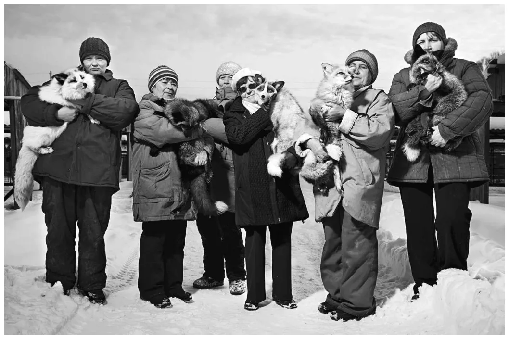

Chương 10 — Sự tiến hóa của hành vi
Mười
Sự Tiến Hóa của Hành Vi
Cuối cùng chúng ta cũng chạm tới những nền tảng. Gen và vùng khởi động (promoter) tiến hóa. Các yếu tố phiên mã, transposase, và enzyme cắt nối (splicing enzyme) cũng vậy. Mọi đặc điểm chịu ảnh hưởng di truyền (tức là mọi thứ) đều tiến hóa. Như lời nhà di truyền học Theodosius Dobzhansky: “Không có gì trong sinh học có ý nghĩa ngoại trừ dưới ánh sáng của tiến hóa.” Kể cả cuốn sách này.1
TIẾN HÓA CĂN BẢN
Tiến hóa dựa trên ba bước: (a) một số đặc điểm sinh học nhất định được di truyền bằng cơ chế di truyền; (b) đột biến và tái tổ hợp gen tạo ra sự biến dị ở những đặc điểm đó; (c) một số biến thể mang lại nhiều “độ thích nghi” (fitness) hơn những biến thể khác. Với những điều kiện đó, theo thời gian, tần suất của các biến thể gen “thích nghi” hơn sẽ tăng lên trong quần thể.
Chúng ta bắt đầu bằng cách dẹp bỏ một số hiểu lầm phổ biến. Thứ nhất, rằng tiến hóa ưu tiên sự sống sót của kẻ thích nghi nhất. Thay vào đó, tiến hóa là chuyện sinh sản, truyền lại các bản sao của gen. Một sinh vật sống hàng thế kỷ nhưng không sinh sản thì hoàn toàn vô hình về mặt tiến hóa.* Sự khác biệt giữa sống sót và sinh sản được thể hiện qua “tính đa hiệu đối kháng” (antagonistic pleiotropy), chỉ những đặc điểm làm tăng khả năng sinh sản sớm trong đời nhưng lại làm giảm tuổi thọ. Ví dụ, tuyến tiền liệt của linh trưởng có tốc độ trao đổi chất cao, giúp tăng cường khả năng vận động của tinh trùng. Mặt lợi: tăng khả năng thụ tinh; mặt hại: tăng nguy cơ ung thư tuyến tiền liệt. Tính đa hiệu đối kháng diễn ra đầy kịch tính ở cá hồi, loài thực hiện hành trình sử thi về bãi đẻ để sinh sản rồi chết. Nếu tiến hóa là về sự sống sót chứ không phải truyền lại bản sao của gen, sẽ chẳng có tính đa hiệu đối kháng nào cả.2
Một hiểu lầm khác là tiến hóa có thể chọn lọc cho các tiền thích nghi (preadaptation) — những đặc điểm trung tính nhưng hóa ra lại hữu ích trong tương lai. Điều này không xảy ra; chọn lọc là dành cho những đặc điểm có ích ở hiện tại. Liên quan đến điều này là hiểu lầm rằng các loài đang sống bằng cách nào đó thích nghi tốt hơn các loài đã tuyệt chủng. Thay vào đó, các loài đã tuyệt chủng cũng từng thích nghi tốt y như vậy, cho đến khi điều kiện môi trường thay đổi đủ mạnh để quét sạch chúng; điều tương tự cũng đang chờ đợi chúng ta. Cuối cùng, có hiểu lầm rằng tiến hóa chọn lọc có định hướng theo hướng phức tạp hơn. Đúng là nếu từng chỉ có sinh vật đơn bào mà nay có sinh vật đa bào, thì độ phức tạp trung bình đã tăng lên. Dẫu vậy, tiến hóa không nhất thiết chọn lọc cho sự phức tạp hơn — cứ nhìn vi khuẩn quét sạch loài người bằng một dịch bệnh nào đó thì rõ.
Hiểu lầm cuối cùng là tiến hóa “chỉ là một giả thuyết”. Tôi xin mạnh dạn giả định rằng những độc giả đã đọc đến đây đều tin vào tiến hóa. Những người phản đối kiểu gì cũng lôi ra cái luận điệu khó chịu rằng tiến hóa chưa được chứng minh, bởi vì (theo một quy ước chẳng mấy hữu ích trong ngành) nó là một “thuyết” (theory) (cũng giống như thuyết mầm bệnh chẳng hạn). Bằng chứng cho thực tế của tiến hóa bao gồm:
Vô số ví dụ nơi áp lực chọn lọc thay đổi đã làm thay đổi tần số gen trong quần thể chỉ trong vài thế hệ (ví dụ: vi khuẩn tiến hóa khả năng kháng kháng sinh). Hơn nữa, cũng có những ví dụ (chủ yếu ở côn trùng, do thời gian thế hệ ngắn) về một loài đang trong quá trình tách thành hai loài. Bằng chứng hóa thạch đồ sộ về các dạng trung gian trong nhiều nhánh phân loại. Bằng chứng phân tử. Chúng ta chia sẻ ~98 phần trăm gen với các loài vượn lớn khác, ~96 phần trăm với khỉ, ~75 phần trăm với chó, ~20 phần trăm với ruồi giấm. Điều này cho thấy tổ tiên chung gần nhất của chúng ta với các loài vượn lớn khác sống gần đây hơn so với tổ tiên chung gần nhất của chúng ta với khỉ, vân vân. Bằng chứng địa lý. Dùng gợi ý của Richard Dawkins để đối đáp với một người theo chủ nghĩa chính thống khăng khăng rằng mọi loài đều bước ra từ con tàu của Noah dưới hình hài hiện tại — làm thế nào mà tất cả ba mươi bảy loài vượn cáo cập bến trên núi Ararat ở vùng cao nguyên Armenia lại đi bộ suốt chặng đường tới Madagascar, không một con nào chết dọc đường để lại hóa thạch? Thiết kế phi thông minh — những điều kỳ quặc chỉ có thể giải thích bằng tiến hóa. Tại sao cá voi và cá heo lại có xương chân thoái hóa? Vì chúng có nguồn gốc từ một loài thú bốn chân sống trên cạn. Tại sao chúng ta lại có cơ dựng lông trên da tạo ra hiện tượng nổi da gà hoàn toàn vô dụng? Vì chúng ta mới tách loài gần đây khỏi các loài vượn khác có cơ dựng lông gắn vào lông, và lông của chúng dựng đứng lên khi bị kích động cảm xúc.
Đủ rồi. Đừng khơi mào cho tôi nói nữa.
—
Tiến hóa điêu khắc các đặc điểm của sinh vật theo hai cách rộng lớn. “Chọn lọc giới tính” (sexual selection) chọn lọc những đặc điểm thu hút cá thể khác giới, còn “chọn lọc tự nhiên” (natural selection) chọn lọc những đặc điểm giúp tăng cường việc truyền lại các bản sao gen qua bất kỳ con đường nào khác — ví dụ như sức khỏe tốt, kỹ năng kiếm ăn, tránh kẻ săn mồi.
Hai quá trình này có thể hoạt động đối nghịch nhau.3 Ví dụ, ở cừu hoang, một gen ảnh hưởng đến kích thước sừng ở con đực. Một biến thể tạo ra cặp sừng lớn, giúp tăng ưu thế xã hội, một điểm cộng cho chọn lọc giới tính. Biến thể kia tạo ra cặp sừng nhỏ, ít tốn kém về mặt trao đổi chất hơn, cho phép con đực sống và giao phối (dù với tần suất thấp) lâu hơn. Bên nào thắng — thành công sinh sản thoáng qua nhưng rực rỡ, hay thành công dai dẳng nhưng khiêm tốn? Một dạng trung gian.* Hoặc hãy xem những con công đực phải trả giá, xét về mặt chọn lọc tự nhiên, cho bộ lông sặc sỡ của chúng — nó tốn cả gia tài năng lượng trao đổi chất để mọc lên, hạn chế khả năng di chuyển, và dễ thu hút kẻ săn mồi. Nhưng nó chắc chắn làm tăng độ thích nghi thông qua chọn lọc giới tính.
Điều quan trọng là cả hai loại chọn lọc đều không nhất thiết chọn ra phiên bản thích nghi “nhất” của một đặc điểm để thay thế tất cả các phiên bản khác. Có thể xảy ra chọn lọc phụ thuộc tần số, nơi phiên bản hiếm hơn trong hai đặc điểm lại được ưu tiên, hoặc chọn lọc cân bằng, nơi nhiều phiên bản của đặc điểm được duy trì ở trạng thái cân bằng.
HÀNH VI CÓ THỂ ĐƯỢC ĐỊNH HÌNH BỞI TIẾN HÓA
Các sinh vật thích nghi tốt đến kinh ngạc. Một loài gặm nhấm sa mạc có quả thận xuất sắc trong việc giữ nước; trái tim khổng lồ của hươu cao cổ có thể bơm máu lên tận não; xương chân voi đủ khỏe để nâng đỡ cả một con voi. Ừ thì, đúng rồi — nó bắt buộc phải như thế: những con gặm nhấm sa mạc có thận giữ nước kém đã không truyền lại được bản sao gen của mình. Do đó có một logic trong tiến hóa, nơi chọn lọc tự nhiên gọt giũa các đặc điểm trở nên thích nghi.
Quan trọng là chọn lọc tự nhiên không chỉ tác động lên giải phẫu và sinh lý mà còn lên cả hành vi — nói cách khác, hành vi cũng tiến hóa, có thể được chọn lọc tối ưu hóa để trở nên thích nghi.
Nhiều nhánh sinh học khác nhau tập trung vào sự tiến hóa của hành vi. Nổi tiếng nhất có lẽ là sinh học xã hội (sociobiology), dựa trên tiền đề rằng hành vi xã hội được tiến hóa gọt giũa để trở nên tối ưu, giống như sự tối ưu hóa cơ sinh học định hình kích thước trái tim hươu cao cổ vậy.4 Sinh học xã hội nổi lên vào thập niên 1970, cuối cùng đẻ ra nhánh tâm lý học tiến hóa — ngành nghiên cứu sự tối ưu hóa tiến hóa của các đặc điểm tâm lý; như chúng ta sẽ thấy, cả hai đều gây tranh cãi dữ dội. Để tiện đơn giản hóa, tôi sẽ gọi những người nghiên cứu sự tiến hóa của hành vi xã hội là “các nhà sinh học xã hội”.
SỰ SỤP ĐỔ CỦA CHỌN LỌC NHÓM
Chúng ta bắt đầu bằng việc vật lộn với một hiểu lầm cố hữu về sự tiến hóa của hành vi. Nguyên nhân là người Mỹ vào thập niên 1960 đã được Marlin Perkins dạy về chủ đề này trên chương trình truyền hình Mutual of Omaha’s Wild Kingdom.
Chương trình đó tuyệt lắm. Perkins làm người dẫn. Jim, cộng sự của ông, làm những trò nguy hiểm với rắn. Và luôn có những màn chuyển cảnh mượt mà từ chương trình sang quảng cáo của Mutual of Omaha — “Cũng giống như sư tử giao phối hàng giờ liền, bạn sẽ muốn mua bảo hiểm hỏa hoạn cho ngôi nhà của mình.”
Tiếc thay, Perkins lại cổ vũ một tư duy tiến hóa sai lầm khủng khiếp. Trên chương trình, cảnh tượng diễn ra thế này: Bình minh trên thảo nguyên; có một đàn linh dương đầu bò bên bờ sông. Cỏ bên kia bờ xanh hơn, ai cũng muốn ăn, nhưng dòng sông lúc nhúc cá sấu săn mồi. Đàn linh dương lưỡng lự, bồn chồn thì bỗng một con linh dương già đẩy lên phía trước, nói: “Ta hy sinh thân mình vì các con của ta,” rồi nhảy ùm xuống nước. Và trong lúc lũ cá sấu bận xử lý nó, cả đàn linh dương kia băng qua sông.
Tại sao con linh dương già lại làm thế? Marlin Perkins sẽ trả lời với uy quyền của một bậc trưởng lão: bởi vì động vật hành xử Vì Lợi Ích của Loài.
Đúng vậy, hành vi tiến hóa nhờ “chọn lọc nhóm” (group selection) vì lợi ích của loài. Ý tưởng này được V. C. Wynne-Edwards cổ vũ vào đầu thập niên 1960, người mà sự sai lầm đã biến ông thành Lamarck của sinh học tiến hóa hiện đại.*5
Động vật không hành xử vì lợi ích của loài. Nhưng còn con linh dương đầu bò kia thì sao? Nhìn kỹ lại bạn sẽ thấy điều thực sự xảy ra. Tại sao nó lại thành kẻ cứu nguy? Bởi vì nó già và yếu. “Lợi ích của loài” cái con khỉ. Cả đàn đã đẩy lão già đó xuống sông.
Chọn lọc nhóm đã bị hạ bệ bởi các nghiên cứu lý thuyết và thực nghiệm cho thấy những mô thức hành vi không tương thích với nó. Công trình then chốt được thực hiện bởi hai vị thần của sinh học tiến hóa, George Williams thuộc Đại học Bang New York ở Stony Brook và Bill (“W.D.”) Hamilton ở Oxford.6 Hãy xét “côn trùng xã hội thực thụ” (eusocial insects), nơi phần lớn cá thể là thợ không sinh sản. Tại sao lại từ bỏ sinh sản để giúp đỡ ong/kiến chúa? Rõ ràng là chọn lọc nhóm rồi. Hamilton đã chứng minh rằng hệ thống di truyền độc đáo của côn trùng xã hội thực thụ khiến cả một đàn kiến, ong hay mối trở thành một siêu sinh vật duy nhất; hỏi tại sao kiến thợ từ bỏ sinh sản cũng giống như hỏi tại sao tế bào mũi của bạn từ bỏ sinh sản. Nói cách khác, côn trùng xã hội thực thụ cấu thành một kiểu “nhóm” độc nhất vô nhị. Sau đó Williams phân tích sâu hơn về việc hệ thống di truyền phổ biến hơn, ở các loài từ côn trùng không sống bầy đàn cho đến chúng ta, không tương thích với chọn lọc nhóm. Động vật không hành xử vì lợi ích của loài. Chúng hành xử để tối đa hóa số bản sao gen của mình truyền sang thế hệ tiếp theo.*
Đây là hòn đá tảng của sinh học xã hội và được tóm tắt trong câu nói trứ danh của Dawkins rằng tiến hóa là về những “gen ích kỷ”. Đã đến lúc xem xét các viên gạch nền của nó.
CHỌN LỌC CÁ THỂ
Việc truyền lại thật nhiều bản sao gen của một cá thể được thực hiện trực tiếp nhất bằng cách tối đa hóa sinh sản. Điều này được tóm tắt qua câu cách ngôn “Con gà là cách của quả trứng tạo ra một quả trứng khác” — hành vi chỉ là một hiện tượng phụ, một phương tiện để đưa bản sao gen vào thế hệ tiếp theo.
Chọn lọc cá thể giải thích các hành vi cơ bản tốt hơn chọn lọc nhóm. Một con linh cẩu lao về phía đàn ngựa vằn. Con ngựa vằn ở gần nhất sẽ làm gì nếu nó theo thuyết chọn lọc nhóm? Đứng yên đó, hy sinh bản thân vì cả nhóm. Ngược lại, một con ngựa vằn theo thuyết chọn lọc cá thể sẽ chạy bán sống bán chết. Ngựa vằn chạy bán sống bán chết. Hoặc hãy xem lũ linh cẩu vừa hạ được một con ngựa vằn. Tư duy chọn lọc nhóm — cả bầy bình tĩnh xếp hàng lần lượt ăn. Chọn lọc cá thể — một cuộc hỗn chiến điên cuồng. Và đó chính là điều xảy ra.
Nhưng khoan đã, người theo thuyết chọn lọc nhóm cãi lại, chẳng phải loài ngựa vằn sẽ được lợi nếu những con chạy nhanh nhất sống sót và truyền lại những gen chạy nhanh đó sao? Tương tự với lợi ích nhóm khi con linh cẩu hung dữ nhất giành được nhiều thức ăn nhất.
Khi càng nhiều sắc thái của hành vi được quan sát, việc bám víu vào chọn lọc nhóm đòi hỏi những lập luận ngày càng vòng vèo gượng gạo. Nhưng chỉ một quan sát duy nhất đủ để nghiền nát chọn lọc nhóm.
Năm 1977, nhà linh trưởng học Sarah Blaffer Hrdy của Đại học Harvard đã ghi nhận một điều đáng kinh ngạc — khỉ voọc (langur) ở vùng núi Abu của Ấn Độ giết hại lẫn nhau.7 Người ta vốn đã biết một số loài linh trưởng đực giết nhau khi tranh giành ngôi thứ thống trị — được thôi, hợp lý, bản tính con trai mà. Nhưng đó không phải điều Hrdy báo cáo; khỉ voọc đực đang giết khỉ con.
Một khi mọi người tin vào tài liệu ghi chép cẩn thận của bà, liền có ngay một lời giải thích dễ dãi — vì khỉ con rất dễ thương và vốn ức chế sự hung hăng, hẳn phải có điều gì đó bệnh hoạn đang xảy ra.8 Có lẽ mật độ quần thể khỉ voọc ở Abu quá cao và cả bầy đang chết đói, hoặc sự hung hăng của con đực bị tràn bờ, hoặc những con đực giết con non đều là lũ xác sống mất trí. Một điều gì đó chắc chắn là bất thường.
Hrdy đã loại bỏ những lời giải thích này và chỉ ra một quy luật rõ rệt của hành vi giết con non. Khỉ voọc cái sống theo bầy với một con đực đầu đàn duy nhất có quyền giao phối. Ở nơi khác có những bầy toàn đực thi thoảng kéo đến đánh đuổi con đực đầu đàn; sau một hồi nội chiến, một con đực sẽ đánh bật những con còn lại. Đây là lãnh địa mới của hắn, gồm toàn những con cái đang ôm con nhỏ của con đực trước. Và điều cốt yếu là thời gian tại vị trung bình của một con đực đầu đàn (khoảng hai mươi bảy tháng) ngắn hơn khoảng cách trung bình giữa các lần sinh. Không con cái nào đang rụng trứng cả, vì chúng đang cho con bú; do đó gã trai mới nổi này bản thân cũng sẽ bị đá văng trước khi bất kỳ con cái nào cai sữa cho con và rụng trứng trở lại. Công cốc hết, chẳng truyền được gen nào.
Về mặt logic, hắn nên làm gì? Giết lũ khỉ con. Việc này làm giảm thành công sinh sản của con đực trước, và nhờ các con cái ngừng cho con bú, chúng bắt đầu rụng trứng trở lại.*
Đó là góc nhìn của con đực. Còn con cái thì sao? Chúng cũng muốn tối đa hóa số bản sao gen truyền lại. Chúng chiến đấu với con đực mới để bảo vệ con mình. Con cái cũng đã tiến hóa chiến lược rơi vào trạng thái “động dục giả” (pseudoestrus) — giả vờ như đang đến kỳ rụng trứng. Chúng giao phối với con đực mới. Và vì bọn đực chẳng biết cóc khô gì về sinh học của voọc cái, chúng mắc bẫy ngay — “Này, sáng nay tao vừa giao phối với ả mà giờ ả đã có con; tao đúng là giống đực siêu đẳng.” Chúng thường sẽ ngừng các cuộc tấn công giết con non.
Bất chấp sự hoài nghi ban đầu, hành vi giết con non mang tính cạnh tranh đã được ghi nhận trong những hoàn cảnh tương tự ở 119 loài, bao gồm sư tử, hà mã và tinh tinh.9
Một biến thể xảy ra ở chuột đồng hamster; vì con đực sống du cư, bất kỳ con non nào nó bắt gặp đều khó có khả năng là con mình, và do đó nó tìm cách giết chết (nhớ quy tắc không bao giờ nhốt chung chuột hamster đực với lũ chuột con chứ?). Một phiên bản khác xảy ra ở ngựa hoang và khỉ đầu chó gelada; con đực mới quấy rối các con cái mang thai đến mức sảy thai. Hoặc giả sử bạn là một con chuột cái đang mang thai và một con đực mới, thích giết con non vừa xuất hiện. Một khi bạn sinh con, lũ con sẽ bị giết, lãng phí toàn bộ năng lượng mang thai. Phản ứng hợp lý? Cắt lỗ bằng “hiệu ứng Bruce”, nơi chuột cái mang thai tự sảy thai nếu ngửi thấy mùi của một con đực mới.10
Như vậy, hành vi giết con non mang tính cạnh tranh xảy ra ở vô số loài (bao gồm cả ở tinh tinh cái, những con đôi khi giết con của những con cái không có quan hệ họ hàng).11
Không một điều nào trong số này có ý nghĩa nếu nằm ngoài chọn lọc cá thể dựa trên gen.
Chọn lọc cá thể thể hiện rõ đến nao lòng ở loài khỉ đột núi, loài linh trưởng yêu thích của tôi.12 Chúng cực kỳ nguy cấp, bám trụ trong những mảng rừng mưa vùng núi cao dọc biên giới Uganda, Rwanda và Cộng hòa Dân chủ Congo. Chỉ còn khoảng một nghìn cá thể khỉ đột sót lại, do suy thoái môi trường sống, dịch bệnh lây từ người sống gần đó, nạn săn trộm và những cơn co giật của chiến tranh tràn qua các vùng biên giới ấy. Và cũng bởi vì khỉ đột núi thực hành hành vi giết con non mang tính cạnh tranh. Hợp lý đối với một cá thể quyết tâm tối đa hóa bản sao gen của mình ở thế hệ sau, nhưng đồng thời đẩy loài động vật kỳ diệu này đến bờ vực tuyệt chủng. Đây không phải là hành xử vì lợi ích của loài.
CHỌN LỌC HỌ HÀNG
Để hiểu khái niệm nền tảng tiếp theo, hãy suy ngẫm xem việc có quan hệ họ hàng với ai đó và truyền lại bản sao gen của “bạn” nghĩa là gì. Giả sử bạn có một người anh em sinh đôi cùng trứng, sở hữu bộ gen giống hệt bạn. Một sự thật gây sửng sốt nhưng không thể chối cãi là: xét về mặt các gen được truyền sang thế hệ sau, chẳng có gì khác biệt giữa việc bạn tự sinh sản hay hy sinh bản thân để người sinh đôi của bạn sinh sản.
Còn anh chị em ruột không phải sinh đôi cùng trứng thì sao? Nhớ lại từ chương 8 rằng bạn chia sẻ 50 phần trăm gen với anh ấy.* Do đó, việc tự sinh sản một lần và việc chết đi để anh ấy sinh sản hai lần là tương đương nhau về mặt tiến hóa. Anh chị em cùng cha khác mẹ hoặc cùng mẹ khác cha, chung 25 phần trăm gen, cứ thế tính lên. . . .
Nhà di truyền học J. B. S. Haldane, khi được hỏi liệu ông có hy sinh mạng sống vì một người anh em không, được cho là đã đáp hóm hỉnh: “Tôi sẵn lòng hy sinh mạng sống vì hai người anh em hoặc tám người anh em họ.” Bạn có thể để lại bản sao gen của mình ở thế hệ sau bằng cách tự sinh sản, nhưng cũng có thể bằng cách giúp họ hàng sinh sản, đặc biệt là họ hàng gần. Hamilton đã hình thức hóa điều này bằng một phương trình tính toán chi phí và lợi ích của việc giúp đỡ ai đó, nhân với mức độ quan hệ huyết thống của họ với bạn. Đây là cốt lõi của chọn lọc họ hàng (kin selection).* Điều này giải thích một sự thật cốt yếu rằng ở vô số loài, việc bạn hợp tác với ai, cạnh tranh với ai hay giao phối với ai phụ thuộc vào mức độ họ hàng của họ với bạn.
Động vật có vú chạm trán chọn lọc họ hàng ngay sau khi sinh, phản ánh một điều hiển nhiên đến sững sờ: con cái hiếm khi cho con của kẻ khác bú. Tiếp theo, ở nhiều loài linh trưởng, mẹ của một đứa trẻ sơ sinh và một con cái vị thành niên có thể bắt đầu một mối quan hệ đầy những mặt lợi và hại — người mẹ thỉnh thoảng để con cái vị thành niên chăm sóc con mình. Với người mẹ, cái lợi là có thời gian đi kiếm ăn mà không phải kè kè đứa bé trên người; cái hại là cô giữ trẻ có thể hậu đậu. Với con cái vị thành niên, cái lợi là có kinh nghiệm làm mẹ; cái hại là công sức chăm trẻ. Lynn Fairbanks ở UCLA đã định lượng những lợi và hại của kiểu “làm mẹ hộ” (allomothering) này (bao gồm việc những con cái vị thành niên từng tập làm mẹ có tỷ lệ sống sót cao hơn cho chính con mình sau này). Và ai thường xuyên làm “bà mẹ hộ”? Cô em gái của người mẹ.13
Một sự mở rộng của làm mẹ hộ là lối sinh sản hợp tác ở các loài khỉ Tân Thế Giới như khỉ đuôi sóc marmoset. Trong các nhóm xã hội của chúng, chỉ có một con cái sinh sản, trong khi những con khác — thường là họ hàng trẻ hơn — phụ giúp chăm sóc con non.14
Mức độ một con linh trưởng đực chăm sóc con non phản ánh mức độ chắc chắn về tư cách làm cha của nó.15 Ở khỉ marmoset, loài hình thành cặp đôi bền vững, con đực làm phần lớn việc chăm con. Ngược lại, ở khỉ đầu chó, nơi một con cái giao phối với nhiều con đực trong chu kỳ động dục, chỉ những ông bố có khả năng cao (tức những con đực đã giao phối vào ngày dễ thụ thai nhất của con cái, khi vùng mông của nó sưng đỏ rõ rệt nhất) mới đầu tư vào sự an nguy của đứa trẻ, hỗ trợ nó khi đánh nhau.*
Ở nhiều loài linh trưởng, tần suất bạn chải lông cho ai đó phụ thuộc vào việc họ có quan hệ họ hàng gần với bạn đến mức nào. Ở khỉ đầu chó, con cái sống cả đời trong bầy gốc của mình (trong khi con đực di cư sang bầy mới khi dậy thì); kết quả là các con cái trưởng thành có mạng lưới hợp tác họ hàng phức tạp và thừa hưởng thứ bậc thống trị từ mẹ. Ở tinh tinh thì ngược lại; con cái rời nhà khi dậy thì, và sự hợp tác dựa trên họ hàng ở tuổi trưởng thành chỉ xảy ra giữa các con đực (ví dụ, nơi các nhóm con đực có họ hàng tấn công những con đực đơn độc từ nhóm lân cận). Còn ở khỉ voọc, khi một con cái bảo vệ con mình trước một con đực mới, nó thường được giúp đỡ bởi những bà con cái lớn tuổi.
Hơn nữa, linh trưởng hiểu về quan hệ họ hàng. Dorothy Cheney và Robert Seyfarth thuộc Đại học Pennsylvania, khi nghiên cứu khỉ vervet hoang dã, đã chứng minh rằng nếu con A đối xử tệ với con B, sau đó, con B có nhiều khả năng đối xử tệ với họ hàng của con A. Và nếu A đối xử tệ với B, họ hàng của B cũng dễ đối xử tệ với A. Hơn thế nữa, nếu A đối xử tệ với B, họ hàng của B có nhiều khả năng đối xử tệ với họ hàng của A.16
Trong những thí nghiệm “phát lại” (playback) tuyệt đẹp, Cheney và Seyfarth trước tiên ghi âm tiếng kêu của từng con vervet trong bầy. Họ đặt một chiếc loa trong bụi rậm, và khi cả bầy đang ngồi quanh đó, họ bật đoạn ghi âm tiếng một đứa trẻ kêu cứu. Thế là các con cái đồng loạt quay sang nhìn mẹ của đứa trẻ đó — “Ê, con của Madge kìa. Bà ta định làm gì đây?” (Lưu ý rằng điều này cũng cho thấy khỉ nhận ra giọng nói.)
Trong một nghiên cứu về khỉ đầu chó hoang dã, Cheney và Seyfarth đợi hai con cái không có họ hàng ngồi gần bụi cây có loa rồi phát một trong ba đoạn ghi âm: (a) tiếng họ hàng của hai con cái đó đang đánh nhau; (b) tiếng họ hàng của một con đang đánh nhau với một bên thứ ba; (c) tiếng hai con cái ngẫu nhiên khác đang đánh nhau.17 Nếu họ hàng của một con cái có liên quan đến vụ đánh nhau, nó sẽ nhìn về phía loa lâu hơn so với khi không có họ hàng nào dính líu. Và nếu đó là họ hàng của hai con cái đang đánh nhau, con có thứ bậc cao hơn sẽ nhắc nhở con cấp dưới biết vị trí của mình bằng cách đuổi nó khỏi chỗ ngồi.
Một nghiên cứu phát lại khác tạo ra kiểu thực tế ảo cho khỉ đầu chó.18 Khỉ đầu chó A thống trị khỉ đầu chó B. Nhờ cắt ghép các đoạn ghi âm tiếng kêu, người ta nghe thấy khỉ A phát ra tiếng kêu phục tùng, còn khỉ B phát ra tiếng kêu thống trị. Khoan, đầu tiên khi A kêu thống trị, B kêu phục tùng, chẳng con khỉ đầu chó nào thèm nhìn vào bụi cây — A > B, hiện trạng nhàm chán. Nhưng nếu nghe thấy khỉ A phát ra tiếng kêu phục tùng sau khi B phát ra tiếng kêu thống trị — một sự đảo ngược thứ bậc — cả bầy đều quay hướng về bụi cây (“Mày có nghe thấy cái tao vừa nghe không?”). Rồi đến kịch bản thứ ba — một sự đảo ngược thứ bậc giữa hai thành viên trong cùng một gia đình. Và chẳng ai thèm nhìn, vì chuyện đó chẳng có gì thú vị. (“Gia đình mà, điên rồ lắm. Mày nên xem nhà tao ấy — bọn tao đảo lộn thứ bậc ầm ầm rồi một tiếng sau lại ôm nhau.”) Khỉ đầu chó “phân loại đồng loại đồng thời theo cả thứ bậc cá nhân lẫn quan hệ họ hàng.”
Như vậy, các loài linh trưởng khác suy ngẫm về quan hệ họ hàng với sự tinh vi đáng kinh ngạc, và quan hệ họ hàng quyết định các mô thức hợp tác và cạnh tranh.
Các loài không phải linh trưởng cũng rất sành chọn lọc họ hàng. Hãy xem điều này — tinh trùng trong đường âm đạo của con cái có thể kết tụ lại, giúp chúng bơi nhanh hơn. Ở một loài chuột hươu nơi con cái giao phối với nhiều con đực, tinh trùng chỉ kết tụ với tinh trùng của chính cá thể đó hoặc của một họ hàng gần.19
Về ví dụ hành vi, sóc và cầy thảo nguyên phát ra tiếng kêu báo động khi phát hiện kẻ săn mồi. Điều đó rất mạo hiểm, vì thu hút sự chú ý về phía kẻ kêu, và lòng vị tha kiểu này phổ biến hơn khi có họ hàng ở gần. Các nhóm xã hội xây dựng quanh họ hàng bên ngoại xuất hiện ở nhiều loài (ví dụ: bầy sư tử, nơi các sư tử cái có họ hàng cho con của nhau bú). Hơn nữa, dù bầy sư tử thường chỉ có một con đực sinh sản, vào những dịp có hai con đực, xác suất chúng là anh em ruột cao hơn mức ngẫu nhiên. Có một sự tương đồng đáng kinh ngạc ở loài người. Phần lớn các nền văn hóa trong lịch sử cho phép chế độ đa thê, với chế độ một vợ một chồng là trường hợp hiếm hơn. Hiếm hơn nữa là chế độ đa phu — nhiều người đàn ông cưới một người phụ nữ. Điều này xảy ra ở miền bắc Ấn Độ, Tây Tạng và Nepal, nơi chế độ đa phu mang tính “huynh đệ” (adelphic, hay fraternal) — một phụ nữ cưới tất cả anh em trai trong một gia đình, từ chàng thanh niên cường tráng cho đến cậu em út còn ẵm ngửa.*20
— Một hệ quả đầy thách thức của chọn lọc họ hàng nảy sinh.
Những cô em họ nóng bỏng. Nếu một cá thể thu được lợi ích thích nghi bằng cách giúp họ hàng truyền lại bản sao gen, tại sao không giúp họ làm điều đó bằng cách giao phối với chính họ? Ọe; giao phối cận huyết làm giảm khả năng sinh sản và gây ra những trục trặc di truyền khó chịu như ở hoàng gia châu Âu.*21 Vì vậy, hiểm họa của cận huyết đối trọng với lợi ích của chọn lọc họ hàng. Các mô hình lý thuyết gợi ý rằng điểm cân bằng tối ưu là giao phối giữa anh chị em họ đời thứ ba. Và quả thực, nhiều loài thích giao phối với đối tượng nằm trong khoảng từ anh em họ đời thứ nhất đến đời thứ ba.22
Điều này xảy ra ở côn trùng, thằn lằn và cá, nơi ngoài ra, các cặp anh em họ giao phối với nhau còn đầu tư chăm sóc con cái nhiều hơn các cặp bố mẹ không có họ hàng. Sở thích giao phối với anh em họ xuất hiện ở chim cút, chim cướp biển và chim sẻ vằn, trong khi ở loài nhạn bụng trắng và bạc má đất sống thành đôi, con cái lén lút bỏ bạn đời để đi giao phối với anh em họ. Sở thích tương tự xảy ra ở một số loài gặm nhấm (bao gồm chuột nhảy khổng lồ Madagascar, một loài nghe đã thấy rợn người ngay cả khi anh em họ không sống chung với nhau).23
Còn con người thì sao? Cũng na ná vậy. Phụ nữ thích mùi của những người đàn ông có họ hàng mức độ vừa phải hơn so với người đàn ông hoàn toàn xa lạ. Và trong một nghiên cứu dữ liệu suốt 160 năm về mọi cặp đôi ở Iceland (vốn là thánh địa của các nhà di truyền học người, nhờ tính đồng nhất về di truyền và kinh tế xã hội), thành công sinh sản cao nhất thuộc về các cuộc hôn nhân giữa anh chị em họ đời thứ ba và thứ tư.24
Nhận Diện Họ Hàng?
Những phát hiện về chọn lọc họ hàng đòi hỏi động vật phải nhận biết được mức độ quan hệ huyết thống. Chúng làm điều này bằng cách nào?
Một số loài có khả năng nhận diện bẩm sinh. Ví dụ, đặt một con chuột vào đấu trường; một đầu là một con cái không họ hàng, đầu kia là một cô em gái ruột cùng cha khác lứa, chưa từng gặp bao giờ. Con chuột dành nhiều thời gian hơn ở bên cô em gái, gợi ý khả năng nhận diện họ hàng dựa trên di truyền.
Cơ chế hoạt động thế nào? Loài gặm nhấm tiết ra mùi pheromone mang chữ ký cá nhân, bắt nguồn từ các gen gọi là phức hợp hòa hợp mô chính (MHC). Đây là một cụm gen cực kỳ biến đổi tạo ra các protein độc nhất vô nhị làm chữ ký cho một cá thể. Hệ thống này ban đầu được các nhà miễn dịch học nghiên cứu. Hệ miễn dịch làm gì? Nó phân biệt giữa bạn và kẻ xâm nhập — “bản thân” và “phi bản thân” — và tấn công kẻ sau. Mọi tế bào của bạn đều mang protein có nguồn gốc MHC độc nhất của bạn, và các tế bào miễn dịch tuần tra sẽ tấn công bất kỳ tế bào nào thiếu mật khẩu protein này. Và các protein bắt nguồn từ MHC cũng đi vào pheromone, tạo ra một chữ ký khứu giác đặc trưng.
Hệ thống này có thể chỉ ra rằng con chuột này là John Smith. Làm sao nó còn biết được gã đó là ông anh trai chưa từng gặp mặt của mình? Họ hàng càng gần, cụm gen MHC càng giống nhau và chữ ký khứu giác càng tương đồng. Các tế bào thần kinh khứu giác ở chuột chứa các thụ thể phản ứng mạnh nhất với chính protein MHC của con chuột đó. Do đó, nếu thụ thể bị kích thích tối đa, nghĩa là con chuột đang ngửi nách chính mình. Nếu kích thích gần tối đa, đó là họ hàng gần. Mức độ vừa phải, họ hàng xa. Không kích thích chút nào (dù protein MHC vẫn được các thụ thể khứu giác khác phát hiện), đó là nách của một con hà mã.*
Sự nhận diện họ hàng qua khứu giác lý giải một hiện tượng kỳ thú. Nhớ lại từ chương 5 cách bộ não trưởng thành tạo ra tế bào thần kinh mới. Ở chuột cống, việc mang thai kích hoạt quá trình sinh thần kinh (neurogenesis) trong hệ khứu giác. Tại sao lại ở đó? Để khả năng nhận diện bằng khứu giác đạt phong độ đỉnh cao khi đến lúc phải nhận mặt đứa con mới sinh của mình; nếu quá trình sinh thần kinh không xảy ra, hành vi làm mẹ sẽ bị suy giảm.25
Rồi còn kiểu nhận diện họ hàng dựa trên các tín hiệu giác quan được in dấu (imprinted). Làm sao tôi biết đứa trẻ sơ sinh nào cần cho bú? Đứa có mùi dịch âm đạo của tôi. Đứa nhỏ nào tôi nên quấn quýt bên cạnh? Đứa có mùi sữa mẹ. Nhiều loài động vật móng guốc dùng những quy tắc như vậy. Loài chim cũng thế. Con chim nào tôi biết là Mẹ? Con chim có tiếng hót đặc trưng mà tôi đã học từ trước khi nở.
Và có những loài xác định quan hệ họ hàng bằng suy luận; tôi đoán là khỉ đầu chó đực thực hiện các phép suy diễn thống kê khi xác định đứa con có khả năng của mình: “Quãng thời gian sưng mông đỉnh điểm của bà mẹ này đã ở bên mình bao lâu? Toàn bộ thời gian. Được rồi, đây là con mình; hành xử cho đúng mực nào.” Điều này đưa chúng ta đến loài có chiến lược nhận thức cao nhất, tức là chúng ta. Chúng ta nhận diện họ hàng bằng cách nào? Theo những cách kém chính xác vô cùng, dẫn đến những hệ quả thú vị.
Chúng ta bắt đầu với một kiểu giả-nhận diện họ hàng đã được lý thuyết hóa từ lâu. Điều gì xảy ra nếu bạn vận hành theo quy tắc rằng bạn hợp tác với (tức là đối xử như họ hàng với) những cá thể chia sẻ các đặc điểm nổi bật với bạn? Điều này tạo điều kiện cho việc truyền lại bản sao gen nếu bạn sở hữu một gen (hoặc các gen) có ba đặc tính: (a) nó tạo ra tín hiệu nổi bật đó; (b) nhận ra nó ở những cá thể khác; và (c) khiến bạn hợp tác với những kẻ có tín hiệu đó. Đó là một dạng chọn lọc họ hàng sơ khai, rút gọn.
Hamilton đã suy đoán về sự tồn tại của một “hiệu ứng râu xanh” (green-beard effect) như vậy; nếu một sinh vật có gen quy định cả việc mọc râu xanh lẫn việc hợp tác với những kẻ có râu xanh khác, thì những kẻ râu xanh sẽ phát đạt khi sống lẫn với những kẻ không có râu xanh.26 Do đó, “điều kiện cốt yếu cho lòng vị tha là sự tương đồng di truyền tại locus vị tha [tức chỉ cần một gen râu xanh đa năng] chứ không phải mối quan hệ phả hệ trên toàn bộ bộ gen.”27
Gen râu xanh có tồn tại thật. Ở nấm men, các tế bào tạo thành những khối kết tụ hợp tác mà không cần phải giống hệt nhau hay thậm chí có họ hàng gần. Thay vào đó, có thể là bất kỳ tế bào nấm men nào biểu hiện một gen mã hóa cho protein bám dính bề mặt tế bào, thứ dính chặt vào các bản sao của cùng phân tử đó trên các tế bào khác.28
Con người cũng thể hiện hiệu ứng râu xanh. Điều cốt yếu là chúng ta khác nhau ở chỗ cái gì được tính là đặc điểm râu xanh. Định nghĩa nó thật hẹp, ta gọi đó là chủ nghĩa cục bộ (parochialism). Kèm thêm sự thù địch với những kẻ không có đặc điểm râu xanh đó, ta có bài ngoại (xenophobia). Định nghĩa đặc điểm râu xanh là việc thuộc về loài người, và bạn đã mô tả một lòng nhân ái sâu sắc.
LÒNG VỊ THA CÓ ĐI CÓ LẠI
Vậy nên đôi khi con gà là cách của quả trứng tạo ra quả trứng khác, gen có thể ích kỷ, và đôi khi ta sẵn lòng hy sinh mạng sống vì hai anh em hoặc tám anh em họ. Có phải mọi thứ đều phải xoay quanh cạnh tranh, quanh việc cá thể hay nhóm họ hàng để lại nhiều bản sao gen hơn kẻ khác, thích nghi hơn, thành công sinh sản hơn không?* Động lực của tiến hóa hành vi có phải luôn là một ai đó phải bị đánh bại?
Hoàn toàn không. Có một ngoại lệ rất thanh lịch, dù hơi chuyên biệt. Nhớ trò oẳn tù tì (kéo/búa/bao) không? Bao bọc búa; búa đập kéo; kéo cắt bao. Liệu búa có muốn đập cho mọi cái kéo tuyệt chủng không? Đời nào. Vì khi đó tất cả bọn bao sẽ bọc chết bọn búa đến tuyệt chủng. Mỗi bên đều có động lực để kiềm chế, tạo nên một thế cân bằng.
Kỳ diệu thay, những thế cân bằng như vậy xuất hiện trong các hệ thống sống, như được chứng minh trong một nghiên cứu về vi khuẩn Escherichia coli.29 Các tác giả tạo ra ba khuẩn lạc E. coli, mỗi loại có một điểm mạnh và một điểm yếu. Nói đơn giản: Chủng 1 tiết ra một loại độc tố. Điểm mạnh: nó có thể giết các tế bào đối thủ. Điểm yếu: tạo ra độc tố rất tốn năng lượng. Chủng 2 dễ bị tổn thương trước độc tố, ở chỗ nó có một chất vận chuyển màng để hấp thụ dinh dưỡng, và độc tố lẻn vào qua chất vận chuyển đó. Điểm mạnh: nó kiếm ăn rất giỏi. Điểm yếu: dễ chết vì độc tố. Chủng 3 không có chất vận chuyển đó nên không bị độc tố làm hại, và cũng không tự tạo độc tố. Điểm mạnh: không phải gánh chi phí tạo độc tố và miễn nhiễm với nó. Điểm yếu: không hấp thụ được nhiều dinh dưỡng bằng. Do đó, việc chủng 1 tiêu diệt chủng 2 sẽ dẫn đến sự diệt vong của chủng 1 nhờ chủng 3. Nghiên cứu cho thấy các chủng có thể cùng tồn tại ở trạng thái cân bằng, mỗi chủng tự giới hạn sự phát triển của mình.
Ngầu đấy. Nhưng nó không hẳn khớp với trực giác của chúng ta về sự hợp tác. Oẳn tù tì đối với hợp tác cũng giống như hòa bình nhờ sự hủy diệt đảm bảo lẫn nhau bằng vũ khí hạt nhân đối với Vườn Địa Đàng vậy.
Điều này dẫn đến nền tảng thứ ba, bên cạnh chọn lọc cá thể và chọn lọc họ hàng: lòng vị tha có đi có lại (reciprocal altruism). “Tôi sẽ gãi lưng cho anh nếu anh gãi lưng cho tôi. Thật ra tôi thà không gãi cho anh nếu trốn được. Và tôi đang canh chừng anh đề phòng anh cũng tính bài đó.”
Trái với những gì bạn có thể kỳ vọng từ chọn lọc họ hàng, các loài động vật không có quan hệ họ hàng thường xuyên hợp tác với nhau. Cá bơi thành đàn, chim bay theo đội hình. Cầy meerkat chấp nhận rủi ro phát ra tiếng kêu báo động giúp đỡ cả bầy, dơi ma cà rồng sống trong các bầy cộng đồng cho con của nhau ăn.*30 Tùy từng loài, các loài linh trưởng không họ hàng chải lông cho nhau, hợp sức xua đuổi kẻ săn mồi và chia sẻ thịt.
Tại sao những kẻ không họ hàng lại hợp tác? Bởi vì nhiều tay vỗ nên kêu, nhiều người chung sức gánh nặng sẽ nhẹ đi. Bơi thành đàn cùng các con cá khác, bạn ít có nguy cơ bị ăn thịt hơn (cuộc cạnh tranh cho vị trí an toàn nhất — ở chính giữa — tạo ra thứ mà Hamilton gọi là “hình học của bầy đàn ích kỷ”). Chim bay theo đội hình chữ V tiết kiệm năng lượng nhờ đón luồng khí nâng từ con chim bay trước (làm nảy sinh câu hỏi ai là kẻ bị kẹt ở vị trí dẫn đầu).31 Nếu tinh tinh chải lông cho nhau, cả bầy sẽ ít ký sinh trùng hơn.
Trong một bài báo kinh điển năm 1971, nhà sinh học Robert Trivers đã vạch ra logic tiến hóa và các thông số mà qua đó các sinh vật không họ hàng thực hiện “lòng vị tha có đi có lại” — chịu một chi phí thích nghi để nâng cao độ thích nghi của một kẻ không họ hàng, với kỳ vọng được đền đáp.32
Không cần phải có ý thức mới tiến hóa được lòng vị tha có đi có lại; quay lại ẩn dụ về cánh máy bay trong hầm gió. Nhưng có một số điều kiện để nó xảy ra. Hiển nhiên, loài đó phải sống có tính xã hội. Hơn nữa, các tương tác xã hội phải đủ thường xuyên để người làm ơn và người mang ơn có khả năng gặp lại nhau. Và các cá thể phải có khả năng nhận mặt lẫn nhau.
Giữa lòng vị tha có đi có lại diễn ra ở vô số loài, các cá thể thường tìm cách gian lận (tức là không đền đáp) và theo dõi những nỗ lực tương tự của kẻ khác đối với mình. Điều này mở ra thế giới chính trị thực dụng (realpolitik) của gian lận và phản chiến lược, cả hai cùng đồng tiến hóa trong những cuộc chạy đua vũ trang leo thang. Đây được gọi là kịch bản “Nữ Hoàng Đỏ” (Red Queen), đặt theo nhân vật Nữ Hoàng Đỏ trong Qua Tấm Gương, kẻ phải chạy ngày càng nhanh hơn chỉ để đứng yên một chỗ.33
Điều này đặt ra hai câu hỏi then chốt liên kết chặt chẽ với nhau:
Giữa những tính toán lạnh lùng của độ thích nghi tiến hóa, khi nào thì tối ưu để hợp tác, khi nào thì nên gian lận?
Trong một thế giới toàn những kẻ không hợp tác, việc trở thành người vị tha đầu tiên là cực kỳ bất lợi. Làm thế nào các hệ thống hợp tác từng bắt đầu được?*
Câu Hỏi Khổng Lồ Số 1: Chiến Lược Hợp Tác Nào Là Tối Ưu?
Trong khi các nhà sinh học đang xây dựng những câu hỏi này, các nhà khoa học khác đã bắt đầu trả lời chúng rồi. Vào thập niên 1940, “lý thuyết trò chơi” được sáng lập bởi nhà bác học đa tài John von Neumann, một trong những cha đẻ của khoa học máy tính. Lý thuyết trò chơi là ngành nghiên cứu về việc ra quyết định chiến lược. Nói hơi khác đi, đó là nghiên cứu toán học về việc khi nào nên hợp tác và khi nào nên gian lận. Chủ đề này vốn đã được khám phá trong kinh tế học, ngoại giao và chiến tranh. Điều còn thiếu là các nhà lý thuyết trò chơi và các nhà sinh học bắt đầu trò chuyện với nhau. Điều đó đã xảy ra vào khoảng năm 1980 xoay quanh bài toán Song đề Tù nhân (Prisoner’s Dilemma - PD), đã được giới thiệu ở chương 3. Đã đến lúc xem xét chi tiết các thông số của nó.
Hai thành viên của một băng đảng, A và B, bị bắt. Công tố viên thiếu bằng chứng để kết tội họ về một trọng tội nhưng có thể khép họ vào một tội nhẹ hơn, với mức án một năm tù. A và B không thể liên lạc với nhau. Công tố viên đưa ra cho mỗi người một thỏa thuận — tố cáo người kia thì án của bạn sẽ được giảm. Có bốn kết quả có thể xảy ra:
Cả A và B đều từ chối tố cáo nhau: mỗi người ngồi tù một năm. Cả A và B đều tố cáo nhau: mỗi người ngồi tù hai năm. A tố cáo B, còn B im lặng: A được tự do còn B ngồi tù ba năm. B tố cáo A, còn A im lặng: B được tự do còn A ngồi tù ba năm.
Do đó, thế lưỡng nan của mỗi tù nhân là nên trung thành với đồng bọn (“hợp tác”) hay phản bội hắn (“phản bội/gian lận”). Suy nghĩ có thể diễn ra như sau: “Tốt nhất là hợp tác. Đây là đồng đội của mình; hắn cũng sẽ hợp tác, và mỗi đứa chỉ ngồi tù có một năm. Nhưng nhỡ mình hợp tác mà hắn đâm sau lưng mình thì sao? Hắn nhởn nhơ ra ngoài, còn mình bóc lịch ba năm. Tốt hơn là phản bội. Nhưng nhỡ cả hai đứa cùng phản bội thì sao — thế là hai năm. Nhưng có lẽ cứ phản bội đi, nhỡ đâu hắn hợp tác . . .” Cứ thế quay vòng mãi.*
Nếu bạn chơi PD chỉ một lần, có một giải pháp duy lý. Nếu bạn, tù nhân A, phản bội, án tù trung bình của bạn là một năm (không năm nếu B hợp tác, hai năm nếu B phản bội); nếu bạn hợp tác, trung bình là hai năm (một năm nếu B hợp tác, ba năm nếu B phản bội). Vì vậy bạn nên phản bội. Trong các phiên bản PD một vòng duy nhất, phản bội luôn là tối ưu. Chẳng mấy khích lệ cho tình hình thế giới.
Giả sử có hai vòng chơi PD. Chiến lược tối ưu cho vòng thứ hai giống hệt như trong phiên bản một vòng — luôn phản bội. Biết trước điều đó, vòng thứ nhất mặc nhiên biến thành giống một trò chơi một vòng — và do đó, trong vòng một cũng phản bội luôn.
Còn trò chơi ba vòng thì sao? Phản bội ở vòng ba, nghĩa là mọi thứ mặc nhiên lùi về trò chơi hai vòng. Trong trường hợp đó, phản bội ở vòng hai, suy ra phản bội ở vòng một.
Luôn tối ưu khi phản bội ở vòng Z, vòng cuối cùng. Và do đó luôn tối ưu khi phản bội ở vòng Z−1, rồi vòng Z−2. . . . Nói cách khác, khi hai cá thể chơi với số vòng đã biết trước, chiến lược tối ưu loại trừ hoàn toàn sự hợp tác.
Nhưng điều gì xảy ra nếu số vòng là không biết trước (một trò chơi PD “lặp lại”)? Mọi thứ trở nên thú vị. Đó là lúc các nhà lý thuyết trò chơi và các nhà sinh học gặp nhau.
Chất xúc tác là nhà khoa học chính trị Robert Axelrod thuộc Đại học Michigan. Ông giải thích cho các đồng nghiệp cách hoạt động của PD và hỏi họ sẽ dùng chiến lược nào trong một trò chơi với số vòng không xác định. Các chiến lược được đưa ra vô cùng đa dạng, có cái phức tạp đến dựng tóc gáy. Sau đó Axelrod lập trình các chiến lược khác nhau và cho chúng đấu với nhau trong một giải đấu vòng tròn mô phỏng quy mô lớn. Chiến lược nào thắng, chiến lược nào tối ưu nhất?
Chiến lược chiến thắng được cung cấp bởi một nhà toán học tại Đại học Toronto, Anatol Rapoport; đúng như mô-típ hành trình người anh hùng huyền thoại, đó lại là chiến lược đơn giản nhất. Hợp tác ở vòng đầu tiên. Sau đó, bạn làm bất cứ điều gì người chơi kia đã làm ở vòng trước đó. Nó được gọi là Ăn Miếng Trả Miếng (Tit for Tat). Chi tiết hơn:
Bạn hợp tác (C) ở vòng đầu tiên, và nếu người chơi kia luôn hợp tác (C), cả hai bạn vui vẻ hợp tác bên nhau đến đầu bạc răng long:
Ví dụ 1: Bạn: C C C C C C C C C C. . . . Cô ấy: C C C C C C C C C C. . . .
Giả sử người chơi kia ban đầu hợp tác nhưng sau đó, bị quỷ Satan cám dỗ, phản bội (D) ở vòng 10. Bạn đã hợp tác, và do đó bạn lãnh đòn:
Ví dụ 2: Bạn: C C C C C C C C C C Cô ấy: C C C C C C C C C D
Vậy nên, bạn Ăn Miếng Trả Miếng cô ấy, trừng phạt cô ấy ở vòng tiếp theo:
Ví dụ 3: Bạn: C C C C C C C C C C D Cô ấy: C C C C C C C C C D ?
Nếu đến lúc đó cô ấy đã quay lại hợp tác, bạn cũng làm vậy; hòa bình trở lại:
Ví dụ 4: Bạn: C C C C C C C C C C D C C C. . . . Cô ấy: C C C C C C C C C D C C C C. . . .
Nếu cô ấy tiếp tục phản bội, bạn cũng vậy:
Ví dụ 5: Bạn: C C C C C C C C C C D D D D D. . . . Cô ấy: C C C C C C C C C D D D D D D. . . .
Giả sử bạn đấu với một kẻ luôn phản bội. Mọi thứ trông như thế này:
Ví dụ 6:
Bạn: C D D D D D D D D D. . . . Cô ấy: D D D D D D D D D D. . . .
Đây là chiến lược Ăn Miếng Trả Miếng. Lưu ý rằng nó không bao giờ có thể thắng trong một cặp đấu. Kết quả tốt nhất là hòa, nếu đấu với một người khác cũng dùng Ăn Miếng Trả Miếng hoặc một người dùng chiến lược “luôn hợp tác”. Bằng không, nó thua với cách biệt nhỏ. Mọi chiến lược khác sẽ luôn đánh bại Ăn Miếng Trả Miếng với một cách biệt nhỏ. Tuy nhiên, các chiến lược khác khi đấu với nhau có thể tạo ra những thất bại thảm khốc. Và khi cộng tổng điểm lại, Ăn Miếng Trả Miếng chiến thắng. Nó thua gần như mọi trận đánh nhưng thắng cả cuộc chiến. Hay đúng hơn, thắng được hòa bình. Nói cách khác, Ăn Miếng Trả Miếng đẩy các chiến lược khác đến chỗ tuyệt chủng.
Ăn Miếng Trả Miếng có bốn ưu điểm: Khuynh hướng của nó là hợp tác (tức đó là trạng thái khởi đầu). Nhưng nó không phải kẻ khờ và sẵn sàng trừng phạt kẻ phản bội. Nó biết tha thứ — nếu kẻ phản bội quay lại hợp tác, Ăn Miếng Trả Miếng cũng thế. Và chiến lược này rất đơn giản.
Giải đấu của Axelrod đã khai sinh ra hàng tỷ bài báo về Ăn Miếng Trả Miếng trong PD và các trò chơi liên quan (sẽ nói thêm sau). Rồi một điều trọng đại xảy ra — Axelrod và Hamilton bắt tay nhau. Các nhà sinh học nghiên cứu sự tiến hóa của hành vi khao khát được định lượng như những người nghiên cứu sự tiến hóa của thận ở chuột sa mạc. Và ngay đây là cả một thế giới các nhà khoa học xã hội đang nghiên cứu chính chủ đề này, dù họ không hề hay biết. PD cung cấp một khung lý thuyết để suy nghĩ về sự tiến hóa chiến lược của hợp tác và cạnh tranh, như Axelrod và Hamilton đã khám phá trong một bài báo năm 1981 (nổi tiếng đến mức thành một cụm từ cửa miệng — ví dụ: “Hôm nay bài giảng của cậu thế nào?” “Tệ lắm, cháy giáo án nặng; mình còn chưa giảng tới Axelrod và Hamilton nữa”).34
Khi các nhà sinh học tiến hóa bắt đầu giao lưu với các nhà khoa học chính trị, họ đưa những khả năng của thế giới thực vào các kịch bản trò chơi. Một trong số đó giải quyết một lỗ hổng trong Ăn Miếng Trả Miếng.
Hãy đưa vào lỗi tín hiệu (signal errors) — một thông điệp bị hiểu nhầm, ai đó quên báo cho ai đó điều gì, hoặc có một trục trặc nhiễu sóng trong hệ thống. Giống như ngoài đời thực.
Có một lỗi tín hiệu xảy ra ở vòng 5, giữa hai cá thể đang dùng chiến lược Ăn Miếng Trả Miếng. Đây là điều mọi người thực sự làm:
Ví dụ 7:
Bạn: C C C C C Cô ấy: C C C C C
Nhưng do lỗi tín hiệu, đây là điều bạn nghĩ đã xảy ra:
Ví dụ 8: Bạn: C C C C C Cô ấy: C C C C D
Bạn nghĩ: “Đồ khốn nạn, dám phản bội kiểu đó à.” Bạn phản bội ở vòng tiếp theo. Do đó, điều bạn nghĩ đã xảy ra là:
Ví dụ 9: Bạn: C C C C C D Cô ấy: C C C C D C
Điều cô ấy nghĩ đang xảy ra, vì không hay biết về lỗi tín hiệu:
Ví dụ 10: Bạn: C C C C C D Cô ấy: C C C C C C
Cô ấy nghĩ: “Đồ khốn nạn, dám phản bội kiểu đó à.” Thế là cô ấy phản bội ở vòng tiếp theo. “Ồ, thích chơi tới bến chứ gì? Tôi chiều,” bạn nghĩ, và phản bội. “Ồ, thích chơi tới bến chứ gì? Tôi chiều,” cô ấy nghĩ:
Ví dụ 11: Bạn: C C C C C D C D C D C D C D C D. . . . Cô ấy: C C C C D C D C D C D C D C D C. . . .
Khi lỗi tín hiệu có thể xảy ra, một cặp người chơi Ăn Miếng Trả Miếng rất dễ bị mắc kẹt mãi mãi trong vòng xoáy trả đũa phản bội qua lại này.*
Việc phát hiện ra lỗ hổng này đã thúc đẩy các nhà sinh học tiến hóa Martin Nowak ở Harvard, Karl Sigmund ở Đại học Vienna và Robert Boyd ở UCLA đưa ra hai giải pháp.35 “Ăn Miếng Trả Miếng Biết Hối Lỗi” (Contrite Tit for Tat) chỉ trả đũa nếu đối phương đã phản bội hai lần liên tiếp. “Ăn Miếng Trả Miếng Vị Tha” (Forgiving Tit for Tat) tự động tha thứ cho một phần ba số lần phản bội. Cả hai đều tránh được kịch bản lỗi tín hiệu tận thế nhưng lại dễ bị lợi dụng.*
Một giải pháp cho điểm yếu bị lợi dụng này là điều chỉnh tần suất tha thứ tùy theo khả năng xảy ra lỗi tín hiệu (“Xin lỗi tôi lại đến muộn; tàu bị trễ” được đánh giá là đáng tin và dễ tha thứ hơn so với “Xin lỗi tôi lại đến muộn; một thiên thạch lại rơi trúng lối xe nhà tôi”).
Một giải pháp khác cho điểm yếu lỗi tín hiệu của Ăn Miếng Trả Miếng là sử dụng chiến lược chuyển đổi. Ban đầu, giữa một đại dương các chiến lược hỗn tạp, nhiều chiến lược thiên hẳn về phản bội, hãy bắt đầu bằng Ăn Miếng Trả Miếng. Một khi bọn kia đã tuyệt chủng, hãy chuyển sang Ăn Miếng Trả Miếng Vị Tha, chiến lược đánh bại Ăn Miếng Trả Miếng thông thường khi có lỗi tín hiệu. Quá trình chuyển đổi từ Ăn Miếng Trả Miếng cứng rắn, hay trừng phạt sang biết lồng ghép sự tha thứ này là gì? Đó chính là xây dựng lòng tin.
Những phát triển khác mô phỏng các hệ thống sống. Nhà khoa học máy tính John Holland của Đại học Michigan đã giới thiệu “thuật toán di truyền” — những chiến lược tự đột biến theo thời gian.
Một bước phát triển sát thực tế khác là tính đến “chi phí” của một số chiến lược nhất định — ví dụ, với Ăn Miếng Trả Miếng, đó là chi phí theo dõi và trừng phạt gian lận — hệ thống báo động đắt đỏ, lương cảnh sát và xây dựng nhà tù. Những thứ này trở nên dư thừa trong một thế giới không có lỗi tín hiệu và toàn những người chơi Ăn Miếng Trả Miếng, và Ăn Miếng Trả Miếng có thể bị thay thế bởi chiến lược Luôn Hợp Tác rẻ tiền hơn.
Do đó, khi có lỗi tín hiệu, chi phí khác nhau cho các chiến lược khác nhau và sự tồn tại của đột biến, một chu kỳ xuất hiện: một quần thể các chiến lược hỗn tạp, bao gồm cả những chiến lược bóc lột, bất hợp tác, bị thay thế bởi Ăn Miếng Trả Miếng, rồi bị thay thế bởi Ăn Miếng Trả Miếng Vị Tha, rồi bởi Luôn Hợp Tác — cho đến khi một đột biến tái du nhập một chiến lược bóc lột lan rộng như cháy rừng, một con sói giữa bầy cừu Luôn Hợp Tác, bắt đầu lại toàn bộ chu kỳ từ đầu. . . .*36 Ngày càng nhiều điều chỉnh khiến các mô hình tiến gần hơn với thế giới thực. Chẳng bao lâu, các chiến lược trò chơi trên máy tính đã bắt đầu giao phối với nhau, hẳn là điều phấn khích nhất từng có đối với các nhà toán học tham gia.
Các nhà sinh học tiến hóa vô cùng thích thú khi tạo ra những mô hình ngày càng tinh vi cùng các nhà kinh tế lý thuyết, nhà ngoại giao lý thuyết và nhà chiến lược quân sự lý thuyết. Câu hỏi thực sự là liệu hành vi động vật có thực sự khớp với bất kỳ mô hình nào trong số này hay không.
Một hệ thống động vật kỳ lạ gợi ý việc thực thi hợp tác kiểu Ăn Miếng Trả Miếng liên quan đến loài cá hamlet đen, vốn hình thành các cặp đôi bền vững.37
Chẳng có gì lạ ở đó. Loài cá này có thể đổi giới tính (một điều xảy ra ở một số loài cá). Như thường lệ, sinh sản tốn kém năng lượng trao đổi chất cho con cái hơn con đực. Vì vậy, hai con cá trong một cặp thay phiên nhau đóng vai con cái tốn kém hơn. Giả sử cá A và cá B đang nhảy điệu tango đổi giới tính, và gần nhất A làm con cái tốn kém còn B làm con đực rẻ tiền. Giả sử B gian lận bằng cách cứ giữ nguyên làm con đực, buộc A tiếp tục làm con cái; A liền chuyển sang làm con đực và giữ nguyên như vậy cho đến khi B lấy lại lương tâm xã hội và biến thành con cái.
Một nghiên cứu khác được trích dẫn rộng rãi gợi ý chiến lược Ăn Miếng Trả Miếng ở loài cá gai (stickleback).38 Con cá ở trong bể, và phía bên kia vách kính là một thứ đáng sợ — một con cá hoàng đế (cichlid) to lớn hơn. Con cá gai rụt rè lao tới rồi lùi lại, thăm dò. Bây giờ đặt một tấm gương vào bể của nó, vuông góc với trục nối hai con cá. Nói cách khác, nhờ tấm gương, có vẻ như xuất hiện một con cá hoàng đế thứ hai bên cạnh con thứ nhất. Thật đáng sợ, ngoại trừ việc từ đâu chui ra một anh chàng cá gai thứ hai bí ẩn cũng tiến lên kiểm tra con cá hoàng đế thứ hai mỗi khi nhân vật chính của chúng ta tiến lên kiểm tra con thứ nhất — “Tôi chẳng biết gã này là ai, nhưng chúng tôi là một đội phối hợp tuyệt vời.”
Bây giờ hãy thuyết phục con cá gai rằng cộng sự của nó đang phản bội. Đặt nghiêng tấm gương sao cho hình ảnh phản chiếu của con cá gai bị lệch lùi ra sau. Bây giờ khi con cá lao lên phía trước, hình ảnh phản chiếu của nó cũng lao lên, nhưng — đồ khốn! — trông như thể nó đang nán lại phía sau một cách an toàn (tụt lại dù chỉ nửa thân cá cũng làm giảm nguy cơ bị săn mồi). Khi con cá tin rằng cộng sự của mình đang phản bội, nó ngừng lao lên phía trước.
Sự phức tạp lớn hơn trong việc thực hành Ăn Miếng Trả Miếng được gợi ý ở một số loài động vật đảm nhận nhiều vai trò khác nhau trong nhóm xã hội của chúng.39 Quay lại kỹ thuật phát lại âm thanh với sư tử, nơi tiếng gầm của một con đực lạ phát ra từ chiếc loa trong bụi rậm (hoặc từ một mô hình sư tử kích thước thật). Lũ sư tử rụt rè tiến lên để điều tra, một việc làm đầy rủi ro. Một cách nhất quán, có những con sư tử nhất định đứng lùi lại phía sau. Việc dung thứ cho những kẻ nhát gan kinh niên này có vẻ vi phạm các đòi hỏi của sự có đi có lại, cho đến khi người ta nhận ra rằng chính những cá thể đó lại dẫn đầu ở những lĩnh vực khác (ví dụ: trong các cuộc đi săn). Một kết luận bất ngờ tương tự xuất hiện ở loài chuột chũi Damaraland. Các nhóm xã hội của nó và họ hàng của nó, chuột chũi trụi lông, giống với côn trùng xã hội, gồm các cá thể thợ không sinh sản và một con chúa duy nhất sinh sản.* Các nhà nghiên cứu nhận thấy có một số con thợ chẳng bao giờ làm việc và béo hơn hẳn phần còn lại. Hóa ra chúng có hai công việc chuyên biệt — vào mùa mưa, chúng đào thông các đường hầm bị ngập lụt, sụp đổ của hang, và khi cần thiết, chúng phân tán đi thực hiện nhiệm vụ đầy rủi ro là lập một thuộc địa mới.
Tôi không bị thuyết phục rằng sự có đi có lại kiểu Ăn Miếng Trả Miếng đã được chứng minh rõ ràng ở các loài khác. Nhưng bằng chứng về việc sử dụng nó một cách chặt chẽ cũng khó mà được các nhà động vật học sao Hỏa ghi nhận ở loài người — xét cho cùng, thường xuyên có những cặp đôi mà một người làm toàn bộ công việc lao động, còn người kia chẳng làm gì ngoài việc thỉnh thoảng đưa cho anh ta vài mảnh giấy màu xanh lá cây. Điểm cốt yếu là động vật có những hệ thống có đi có lại kèm theo sự nhạy bén với hành vi gian lận.
Câu Hỏi Khổng Lồ Số 2: Làm Thế Nào Sự Hợp Tác Từng Bắt Đầu Được?
Vậy là một nhúm người chơi Ăn Miếng Trả Miếng có thể đánh bại một hỗn hợp các chiến lược khác, kể cả những chiến lược cực kỳ bóc lột và bất hợp tác, thua các trận đánh nhưng thắng cả cuộc chiến. Nhưng điều gì xảy ra nếu chỉ có một kẻ chơi Ăn Miếng Trả Miếng trong một quần thể gồm chín mươi chín kẻ Luôn Phản Bội? Ăn Miếng Trả Miếng chẳng có cửa nào. Những kẻ Luôn Phản Bội đấu với nhau tạo ra kết quả tệ thứ nhì cho mỗi bên. Nhưng một kẻ Ăn Miếng Trả Miếng đấu với một kẻ Luôn Phản Bội còn thê thảm hơn, nhận lấy phần thưởng của kẻ ngốc ngay vòng đầu tiên trước khi trên thực tế biến thành một kẻ Luôn Phản Bội. Điều này đặt ra thách thức lớn thứ hai cho lòng vị tha có đi có lại: quên chuyện chiến lược nào tốt nhất để nuôi dưỡng hợp tác đi — làm thế nào bạn từng khởi phát được bất kỳ kiểu hợp tác nào ngay từ đầu? Giữa một biển toàn những kẻ Luôn Phản Bội, con cá hamlet đen, con chuột chũi hay con amip Dictyostelium đầu tiên nào đó, sau khi đọc Gandhi, Mandela, Axelrod và Hamilton, dám bước bước vị tha đầu tiên sẽ lãnh đủ, tụt lại phía sau mọi kẻ khác mãi mãi. Người ta gần như có thể nghe thấy tiếng cười khẩy chế giễu của lũ amip Luôn Phản Bội.
Hãy làm cho mọi thứ dễ dàng hơn một chút để Ăn Miếng Trả Miếng có được chỗ đứng. Hãy xét hai kẻ chơi Ăn Miếng Trả Miếng giữa chín mươi tám kẻ Luôn Phản Bội. Cả hai đều sẽ sụp đổ tan tành . . . trừ khi chúng tìm thấy nhau và hình thành một hạt nhân hợp tác ổn định, nơi những kẻ Luôn Phản Bội buộc phải chuyển sang Ăn Miếng Trả Miếng hoặc tuyệt chủng. Một ổ hợp tác kết tinh và lan rộng ra khắp quần thể.
Đây là lúc hiệu ứng râu xanh phát huy tác dụng, những đặc điểm nổi bật của những người hợp tác giúp họ nhận ra nhau. Một cơ chế khác mang tính không gian, nơi chính đặc điểm hợp tác giúp những người hợp tác dễ dàng tìm thấy nhau.
Một con đường khác đã được đề xuất để kích hoạt lòng vị tha có đi có lại. Thỉnh thoảng một sự kiện địa lý xảy ra (chẳng hạn, một cầu đất liền biến mất), cô lập một phần quần thể trong nhiều thế hệ. Điều gì xảy ra trong một “quần thể sáng lập” (founder population) như vậy? Giao phối cận huyết, thúc đẩy sự hợp tác thông qua chọn lọc họ hàng. Cuối cùng cầu đất liền xuất hiện trở lại, quần thể sáng lập cận huyết giàu tính hợp tác tái nhập vào nhóm chính, và sự hợp tác lan tỏa ra ngoài.*
Chúng ta sẽ quay lại vấn đề khởi phát sự hợp tác ở chương cuối cùng.
ĐỨNG TRÊN BA CHÂN
Chúng ta vừa thấy ba nền tảng của tư duy về sự tiến hóa của hành vi — chọn lọc cá thể, chọn lọc họ hàng và lòng vị tha có đi có lại. Hơn nữa, chúng ta đã thấy ba khái niệm này có thể giải thích những hành vi tưởng chừng khó hiểu. Một số liên quan đến chọn lọc cá thể, với hành vi giết con non mang tính cạnh tranh là ví dụ kinh điển. Những hành vi khác dễ giải thích nhất bằng chọn lọc họ hàng — tại sao chỉ có sự hung hăng giữa con đực với con đực giữa các nhóm ở một số loài linh trưởng; tại sao nhiều loài có hệ thống thứ bậc cha truyền con nối; tại sao việc giao phối với anh em họ lại phổ biến hơn người ta tưởng. Và một số hành vi hoàn toàn là về lòng vị tha có đi có lại. Nếu không thì tại sao một con dơi ma cà rồng, vốn nhận thức rõ sức mạnh đánh bại của chọn lọc nhóm, lại ợ máu ra cho con của kẻ khác ăn?
Hãy xem xét thêm vài ví dụ nữa.
Loài Gắn Kết Cặp Đôi So Với Loài Đấu Trường
Giả sử bạn vừa phát hiện ra hai loài linh trưởng mới. Dù đã quan sát cả hai suốt nhiều năm, đây là tất cả những gì bạn biết: Ở loài A, con đực và con cái có kích thước cơ thể, màu sắc và cơ bắp tương đồng nhau; ở loài B, con đực to lớn và cơ bắp hơn hẳn con cái và có màu sắc khuôn mặt sặc sỡ, nổi bật (thuật ngữ chuyên môn: loài B có mức độ “dị hình giới tính” cao). Giờ chúng ta sẽ thấy hai dữ kiện này cho phép bạn dự đoán chính xác hàng tá điều về hai loài này.

Các cặp đực-cái của khỉ tamarin (trên) và khỉ mặt chó mandrill (dưới)
Trước hết, loài nào có những cuộc xung đột kịch tính, hung hăng giữa các con đực để tranh giành thứ bậc thống trị cao? Loài B, nơi con đực đã được chọn lọc tiến hóa cho kỹ năng chiến đấu và phô trương. Ngược lại, con đực loài A ít hung hăng — đó là lý do con đực không được chọn lọc để có cơ bắp cuồn cuộn.
Còn sự chênh lệch về thành công sinh sản ở con đực thì sao? Ở một loài, 5 phần trăm số con đực thực hiện gần như toàn bộ việc giao phối; ở loài kia, mọi con đực đều sinh sản vài lần. Trường hợp đầu mô tả loài B — đó là mục đích của tất cả những cuộc cạnh tranh thứ bậc kia — trường hợp sau là loài A.
Tiếp theo, ở một loài, nếu con đực giao phối với con cái và cô nàng thụ thai, anh chàng sẽ chăm sóc con cái cực kỳ chu đáo. Ngược lại, không hề thấy kiểu “đầu tư làm cha” như vậy ở loài kia. Quá dễ đoán: trường hợp đầu mô tả loài A; số ít con đực loài B làm cha của hầu hết lũ con chắc chắn chẳng hơi đâu đi chăm con.
Một loài có xu hướng sinh đôi, loài kia thì không. Dễ ợt — xu hướng sinh đôi nằm ở loài A, nơi có sẵn hai đôi tay phụ huynh.
Con đực kén chọn đến mức nào về đối tượng giao phối? Ở loài B, con đực giao phối với bất kỳ ai, bất kỳ đâu, bất kỳ lúc nào — chỉ tốn mỗi chút tinh trùng. Ngược lại, con đực loài A, với quy tắc “Anh làm cô ấy có bầu, anh phải chăm con”, kén chọn hơn nhiều. Liên quan đến điều đó, loài nào hình thành các cặp đôi bền vững? Tất nhiên là loài A.
Sau khi hiệu chỉnh theo kích thước cơ thể, con đực của loài nào có tinh hoàn lớn hơn và lượng tinh trùng cao hơn? Chính là loài B, luôn trong tư thế sẵn sàng giao phối ngay khi cơ hội ập đến.
Con cái tìm kiếm điều gì ở một bạn tình tiềm năng? Con cái loài B chẳng nhận được gì từ con đực ngoài bộ gen, nên chúng phải là những gen tốt. Điều này giúp giải thích các đặc điểm sinh dục thứ cấp hào nhoáng của con đực — “Nếu anh có thể phung phí ngần ấy năng lượng cho cơ bắp cộng thêm cặp gạc màu neon lố bịch này, anh hẳn phải có thể trạng tuyệt vời, với loại gen mà em muốn truyền cho con mình.” Ngược lại, con cái loài A tìm kiếm hành vi ổn định, gắn bó và kỹ năng làm cha tốt ở con đực. Điều này thấy ở các loài chim mang mô thức này, nơi con trống phô diễn tài nghệ làm cha trong lúc tán tỉnh — mớm giun mang tính biểu tượng cho con mái, bằng chứng cho thấy anh ta sẽ là một tay kiếm giun cừ khôi. Liên quan đến điều đó, trong các phiên bản loài chim của loài A và B, ở loài nào con mái có nhiều khả năng bỏ rơi con mình, truyền lại nhiều bản sao gen hơn bằng cách đi sinh sản với một con trống khác? Loài A, nơi bạn thấy hiện tượng “cắm sừng” — bởi vì con trống sẽ ở lại đó, chăm sóc lũ con.
Liên quan đến điều đó, ở loài A, con cái cạnh tranh quyết liệt để kết đôi với một con đực đặc biệt đáng khao khát (tức là có tính phụ hệ/chăm con tốt). Ngược lại, con cái loài B chẳng cần cạnh tranh, vì tất cả những gì chúng nhận được từ con đực chỉ là tinh trùng, và lượng tinh trùng từ những con đực đáng khao khát luôn đủ chia cho tất cả.
Kỳ diệu thay, những gì chúng ta vừa mô tả là một sự phân đôi rộng lớn và đáng tin cậy giữa hai hệ thống xã hội, trong đó A là loài “gắn kết cặp đôi” (pair-bonding), còn B là loài “đấu trường” (tournament).*
Gắn Kết Cặp Đôi Đấu Trường
Hành vi làm cha của con đực Rất nhiều Rất ít
Độ kén chọn bạn tình của con đực Cao Thấp
Chênh lệch thành công sinh sản ở con đực Thấp Cao
Kích thước tinh hoàn, lượng tinh trùng Nhỏ/thấp Lớn/cao
Mức độ hung hăng đực-đực Thấp Cao
Mức độ dị hình giới tính về trọng lượng cơ thể, sinh lý, màu sắc và tuổi thọ Thấp Cao
Con cái chọn lọc dựa trên Kỹ năng làm cha Gen tốt
Tỷ lệ cắm sừng Cao Thấp
Các loài linh trưởng gắn kết cặp đôi bao gồm khỉ Nam Mỹ như marmoset, tamarin và khỉ cú, và trong số các loài vượn là vượn tay dài (với các ví dụ không phải linh trưởng gồm thiên nga, chó rừng, hải ly, và tất nhiên, chuột đồng thảo nguyên ở chương 4). Các loài đấu trường kinh điển bao gồm khỉ đầu chó, khỉ mặt chó mandrill, khỉ rhesus, khỉ vervet và tinh tinh (với các ví dụ không phải linh trưởng gồm linh dương gazelle, sư tử, cừu, công và hải tượng). Không phải loài nào cũng khớp hoàn hảo vào một trong hai thái cực (hãy đón chờ phần sau). Dẫu vậy, điểm cốt lõi là tính logic nội tại mà qua đó các đặc điểm của mỗi kiểu loài tụ lại thành chùm, dựa trên các nguyên lý tiến hóa này.
Xung Đột Cha Mẹ - Con Cái
Một đặc điểm khác của hành vi làm đảo lộn chọn lọc họ hàng. Từ nãy đến giờ chúng ta nhấn mạnh thực tế là họ hàng chia sẻ nhiều gen và mục tiêu tiến hóa. Tuy nhiên, ngoại trừ sinh đôi cùng trứng, một điều cũng quan trọng không kém là họ hàng không chia sẻ toàn bộ gen hay mục tiêu của nhau. Điều này có thể gây ra xung đột.
Có xung đột cha mẹ - con cái. Một ví dụ kinh điển là liệu một con cái có nên cung cấp cho đứa con hiện tại dinh dưỡng tuyệt vời, đảm bảo sự sống sót của nó, nhưng phải đánh đổi bằng dinh dưỡng dành cho những đứa con khác của cô (hoặc hiện tại hoặc tương lai). Đây là xung đột cai sữa.40
Điều này gây ra những cơn ăn vạ bất tận ở linh trưởng.41 Một con khỉ đầu chó cái trông bơ phờ và cáu kỉnh. Cách ba bước phía sau là đứa con chập chững biết đi của nó, phát ra những tiếng rên rỉ, nỉ non thảm thiết nhất có thể tưởng tượng được. Cứ vài phút đứa nhỏ lại tìm cách sà vào bú; bà mẹ bực bội đẩy nó ra, thậm chí tát nó. Lại gào khóc dữ hơn. Đó là xung đột cai sữa giữa cha mẹ và con cái; chừng nào bà mẹ còn cho bú, bà ta khó có khả năng rụng trứng, kìm hãm tiềm năng sinh sản tương lai của mình. Khỉ đầu chó mẹ tiến hóa để cai sữa cho con ở độ tuổi chúng có thể tự kiếm ăn, còn khỉ đầu chó con tiến hóa để tìm cách trì hoãn ngày đó. Thú vị thay, khi con cái già đi, với khả năng có thêm con trong tương lai giảm dần, chúng trở nên bớt quyết liệt hơn trong việc cai sữa.*
Cũng có xung đột mẹ - thai nhi. Bạn là một bào thai mang trong mình một chương trình nghị sự tiến hóa. Bạn muốn gì? Dinh dưỡng tối đa từ Mẹ, và mặc kệ việc đó có ảnh hưởng đến tiềm năng sinh sản tương lai của Mẹ hay không. Trong khi đó, Mẹ muốn cân bằng giữa triển vọng sinh sản hiện tại và tương lai. Kỳ diệu thay, thai nhi và Mẹ có một cuộc giằng co trao đổi chất liên quan đến insulin, hormone tuyến tụy được tiết ra khi đường huyết tăng, giúp kích hoạt đường glucose đi vào các tế bào đích. Thai nhi tiết ra một loại hormone khiến các tế bào của Mẹ trở nên trơ với insulin (tức “kháng insulin”), cũng như một loại enzyme phân hủy insulin của Mẹ. Nhờ vậy Mẹ hấp thụ ít glucose từ máu hơn, để lại nhiều hơn cho thai nhi.*
Xung Đột Di Truyền Liên Giới
Ở một số loài, thai nhi có một đồng minh trong cuộc xung đột mẹ/thai nhi — đó là người cha. Hãy xét một loài nơi con đực sống di cư, giao phối với con cái rồi bỏ đi, không bao giờ gặp lại. Quan điểm của con đực về xung đột mẹ/thai nhi là gì? Đảm bảo thai nhi, tức con của hắn, vơ vét càng nhiều dinh dưỡng càng tốt, ngay cả khi điều đó làm giảm tiềm năng sinh sản tương lai của Mẹ — mặc xác, những đứa con sau này đâu phải con hắn. Hắn không chỉ cổ vũ suông cho thai nhi của mình.
Điều này giúp giải thích một đặc điểm bí ẩn, kỳ quặc của di truyền học. Thông thường một gen hoạt động giống hệt nhau, bất kể nó đến từ bố hay mẹ. Nhưng một số gen hiếm gặp bị “in dấu” (imprinted), hoạt động khác nhau, hoặc chỉ được kích hoạt, tùy thuộc vào nguồn gốc từ bố hay mẹ. Mục đích của chúng đã được khám phá trong một tổng hợp sáng tạo của nhà sinh học tiến hóa David Haig ở Harvard. Các gen in dấu từ bố thiên về thúc đẩy thai nhi phát triển mạnh hơn, trong khi các gen in dấu từ mẹ chống lại điều này. Ví dụ, một số gen từ bố mã hóa cho các phiên bản yếu tố tăng trưởng cực mạnh, trong khi gen từ mẹ mã hóa cho các thụ thể yếu tố tăng trưởng tương đối kém nhạy. Một gen có nguồn gốc từ bố biểu hiện trong não khiến trẻ sơ sinh bú hăng hơn; phiên bản có nguồn gốc từ mẹ kiềm chế điều này. Đó là một cuộc chạy đua vũ trang, với Bố dùng di truyền thúc giục con mình phát triển nhiều hơn bất chấp kế hoạch sinh sản tương lai của con cái, và Mẹ dùng di truyền đối kháng lại bằng một chiến lược sinh sản cân bằng hơn.*
Các loài đấu trường, nơi con đực ít đầu tư vào thành công sinh sản tương lai của con cái, có vô số gen in dấu, trong khi các loài gắn kết cặp đôi thì không.42 Còn loài người thì sao? Hãy đón xem.
CHỌN LỌC ĐA TẦNG
Như vậy chúng ta đã có chọn lọc cá thể, chọn lọc họ hàng và lòng vị tha có đi có lại. Và rồi chuyện gì đã xảy ra trong những năm gần đây? Chọn lọc nhóm tái xuất hiện, lẻn vào bằng cửa sau.
“Tân chọn lọc nhóm” (neo–group selection) đã chen ngang vào một cuộc tranh luận kéo dài về “đơn vị của chọn lọc”.
Kiểu Gen So Với Kiểu Hình, và Tầng Chọn Lọc Có Ý Nghĩa Nhất
Để hiểu điều này, hãy đối chiếu kiểu gen (genotype) và kiểu hình (phenotype). Kiểu gen = cấu trúc di truyền của một cá thể. Kiểu hình = những đặc điểm có thể quan sát được từ thế giới bên ngoài do kiểu gen đó tạo ra.*
Giả sử có một gen ảnh hưởng đến việc lông mày của bạn tách thành hai bên riêng biệt hay nối liền thành một hàng lông mày giao nhau (unibrow). Bạn nhận thấy tỷ lệ lông mày nối liền đang giảm trong quần thể. Tầng nào quan trọng hơn để giải thích tại sao — biến thể gen hay kiểu hình lông mày? Sau chương 8, chúng ta biết kiểu gen và kiểu hình không đồng nghĩa với nhau, bởi vì còn có tương tác gen/môi trường. Có lẽ một tác động môi trường tiền sản nào đó đã làm câm lặng một phiên bản của gen chứ không phải phiên bản kia. Có lẽ một nhóm nhỏ trong quần thể theo một tôn giáo bắt buộc phải che lông mày khi ở gần người khác giới, và do đó kiểu hình lông mày hoàn toàn không chịu tác động của chọn lọc giới tính.
Bạn là một nghiên cứu sinh đang tìm hiểu sự suy giảm của lông mày nối liền, và bạn phải chọn nghiên cứu mọi thứ ở cấp độ kiểu gen hay kiểu hình. Kiểu gen: giải trình tự các biến thể gen lông mày, cố gắng hiểu cơ chế điều hòa của chúng. Kiểu hình: xem xét, chẳng hạn, ngoại hình lông mày và sự lựa chọn bạn tình, hoặc liệu lông mày nối liền có hấp thụ nhiều nhiệt hơn từ ánh nắng mặt trời, từ đó làm tổn thương vỏ não trước trán, gây ra hành vi xã hội không phù hợp và làm giảm thành công sinh sản hay không.

Đây chính là cuộc tranh luận — tiến hóa được hiểu rõ nhất bằng cách tập trung vào kiểu gen hay kiểu hình?
Người ủng hộ nổi tiếng nhất cho quan điểm lấy gen làm trung tâm từ lâu vẫn là Dawkins, với khái niệm kinh điển “gen ích kỷ” — chính gen mới là thứ được truyền sang thế hệ sau, thứ mà các biến thể của nó lan rộng hay suy tàn theo thời gian. Hơn nữa, một gen là một chuỗi chữ cái rõ ràng và phân biệt, mang tính quy giản và không thể chối cãi, trong khi các đặc điểm kiểu hình lại mờ nhạt và kém rạch ròi hơn nhiều.
Đây là cốt lõi của khái niệm “con gà chỉ là cách của quả trứng tạo ra một quả trứng khác” — cơ thể sinh vật chỉ là một cỗ xe để bộ gen tự nhân bản ở thế hệ tiếp theo, và hành vi chỉ là thứ hiện tượng phụ mỏng manh tạo điều kiện cho sự nhân bản đó.
Quan điểm lấy gen làm trung tâm này có thể chia làm hai. Một là bộ gen (tức tập hợp tất cả các gen, yếu tố điều hòa, vân vân) là cấp độ tốt nhất để tư duy. Quan điểm cấp tiến hơn, được Dawkins nắm giữ, là cấp độ phù hợp nhất chính là từng gen đơn lẻ — tức là những gen ích kỷ, chứ không phải những bộ gen ích kỷ.
Giữa một số bằng chứng cho chọn lọc đơn gen (một hiện tượng ít được biết đến gọi là xung đột nội bộ gen, mà chúng ta sẽ không đi sâu vào), phần lớn những người bỏ phiếu cho tầm quan trọng của gen hơn kiểu hình đều coi sự ích kỷ của đơn gen chỉ là một màn phụ và bỏ phiếu rằng cấp độ bộ gen của chọn lọc mới là quan trọng nhất.
Trong khi đó, có quan điểm cho rằng kiểu hình lấn át kiểu gen, điều được Ernst Mayr, Stephen Jay Gould và những người khác cổ vũ. Cốt lõi lập luận của họ là chính kiểu hình chứ không phải kiểu gen mới là thứ được chọn lọc. Như Gould viết: “Dù Dawkins muốn gán cho gen bao nhiêu quyền năng đi nữa, có một thứ ông không thể trao cho chúng — khả năng lộ diện trực tiếp trước chọn lọc tự nhiên.” Theo quan điểm đó, gen và tần số các biến thể của chúng chẳng qua chỉ là bản ghi chép lại những gì nảy sinh từ chọn lọc kiểu hình.43
Dawkins đã đưa ra một phép ẩn dụ tuyệt vời: công thức làm bánh là kiểu gen, còn hương vị chiếc bánh là kiểu hình.* Những người sùng bái kiểu gen nhấn mạnh rằng công thức mới là thứ được truyền lại, chuỗi từ ngữ tạo nên một bản sao ổn định. Nhưng người ta chọn lọc dựa trên hương vị, chứ không phải công thức, phe kiểu hình phản bác, và hương vị phản ánh nhiều thứ hơn là chỉ mỗi công thức — xét cho cùng, có những tương tác công thức/môi trường nơi các thợ làm bánh có tay nghề khác nhau, bánh nướng ở các độ cao khác nhau sẽ ra khác nhau, vân vân. Câu hỏi công thức-đối-chọi-hương-vị có thể được đặt ra một cách thực tế: Công ty bánh của bạn bán không đủ chạy. Bạn thay đổi công thức hay thay đổi thợ làm bánh?
Chẳng lẽ chúng ta không thể hòa thuận với nhau sao? Có một câu trả lời nhân ái hiển nhiên, rằng có chỗ cho nhiều quan điểm và cơ chế khác nhau trong mái lều bảy sắc cầu vồng của sự đa dạng tiến hóa. Những hoàn cảnh khác nhau sẽ đưa những cấp độ chọn lọc khác nhau lên hàng đầu. Đôi khi cấp độ giàu thông tin nhất là đơn gen, đôi khi là bộ gen, đôi khi là một đặc điểm kiểu hình đơn lẻ, đôi khi là tập hợp toàn bộ các đặc điểm kiểu hình của sinh vật.44 Chúng ta vừa đi đến ý tưởng hợp lý về chọn lọc đa tầng (multilevel selection).
Sự Hồi Sinh của Chọn Lọc Nhóm
Hoan hô, tiến bộ rồi. Đôi khi chú ý đến công thức là hợp lý nhất, đôi khi là quy trình nướng bánh; công thức là thứ được nhân bản, hương vị là thứ được chọn lựa.
Nhưng còn một cấp độ khác nữa. Đôi khi doanh số bán bánh có thể thay đổi mang tính quyết định nhất bằng cách thay đổi thứ khác ngoài công thức hay hương vị — quảng cáo, bao bì, hoặc nhận thức xem chiếc bánh là nhu yếu phẩm hay xa xỉ phẩm. Đôi khi doanh số thay đổi nhờ gắn sản phẩm với một đối tượng khán giả cụ thể — hãy nghĩ đến các sản phẩm quảng cáo quy trình thương mại công bằng, Tiệm Bánh Hồi Giáo Da Đen của Quốc Gia Hồi Giáo, hay hệ tư tưởng Cơ Đốc giáo chính thống của chuỗi nhà hàng Chick-fil-A. Và trong những trường hợp đó, cả công thức lẫn hương vị đều có thể bị hệ tư tưởng lấn át trong quyết định mua hàng.
Đây là chỗ mà tân chọn lọc nhóm khớp vào chọn lọc đa tầng — ý tưởng rằng một số đặc điểm di truyền có thể kém thích nghi đối với cá thể nhưng lại thích nghi đối với một nhóm. Điều này mang đậm dấu ấn của sự hợp tác và tính thân thiện xã hội, bước thẳng ra từ phân tích về những kẻ chơi Ăn Miếng Trả Miếng tìm thấy nhau giữa một biển toàn những kẻ Luôn
Phản Bội. Phát biểu một cách hình thức hơn, đó là khi A áp đảo B nhưng một nhóm các B lại áp đảo một nhóm các A.
Đây là một ví dụ tuyệt vời về chủ nghĩa tân chọn lọc nhóm: Là một chủ trại gà, bạn muốn các đàn gà của mình đẻ càng nhiều trứng càng tốt. Hãy chọn những con gà đẻ trứng năng suất nhất trong mỗi đàn, gộp chúng thành một đàn toàn những siêu sao gà mái, những con mà hẳn sẽ đạt năng suất khổng lồ. Thay vào đó, sản lượng trứng lại tụt xuống thảm hại.45
Tại sao mỗi siêu sao kia từng là nữ hoàng đẻ trứng trong đàn ban đầu của nó? Bởi vì nó mổ các con yếu thế một cách hung hãn đủ để khiến chúng căng thẳng đến mức suy giảm khả năng sinh sản. Nhốt tất cả những ả đanh đá này lại với nhau, thì một đàn gồm toàn những con gà yếu thế bị bắt nạt sẽ đẻ vượt trội hơn hẳn chúng.
Điều này khác xa một trời một vực với câu “động vật hành xử vì lợi ích của loài”. Thay vào đó, đây là hoàn cảnh của một đặc điểm chịu ảnh hưởng di truyền, tuy thích nghi ở cấp độ cá thể, nhưng lại bộc lộ sự kém thích nghi khi được cả nhóm chia sẻ và khi có sự cạnh tranh giữa các nhóm (ví dụ: tranh giành một ổ sinh thái).
Đã có sự kháng cự đáng kể đối với chủ nghĩa tân chọn lọc nhóm. Một phần mang tính bản năng, thường rõ rệt ở thế hệ cũ — “Tuyệt thật, chúng ta vừa vất vả tịch thu hết đống băng đĩa Wild Kingdom xong, giờ lại phải chơi trò Đập Chuột với thứ tình cảm ủy mị của chọn lọc nhóm à?” Nhưng sự phản đối căn bản hơn đến từ những người phân biệt rõ chọn lọc nhóm cũ tệ hại với tân chọn lọc nhóm, chấp nhận rằng cái sau có thể xảy ra, nhưng cho rằng nó cực kỳ hiếm.
Có lẽ đúng thế trên khắp vương quốc động vật. Nhưng tân chọn lọc nhóm diễn ra với tần suất và hệ quả to lớn ở loài người. Các nhóm tranh giành bãi săn, đồng cỏ, nguồn nước. Các nền văn hóa khuếch đại cường độ chọn lọc giữa các nhóm và làm giảm chọn lọc nội bộ nhóm bằng chủ nghĩa vị chủng, sự bất khoan dung tôn giáo, chính trị dựa trên chủng tộc, vân vân. Nhà kinh tế học Samuel Bowles, thuộc Viện Santa Fe, nhấn mạnh cách xung đột giữa các nhóm như chiến tranh là động lực thúc đẩy sự hợp tác nội bộ nhóm (“lòng vị tha cục bộ”); ông gọi xung đột liên nhóm là “bà đỡ của lòng vị tha”.46
Phần lớn giới chuyên môn hiện nay vừa chấp nhận chọn lọc đa tầng vừa thấy có chỗ cho các trường hợp của tân chọn lọc nhóm, đặc biệt là ở loài người. Phần lớn sự tái xuất hiện này là công lao của hai nhà khoa học. Người đầu tiên là David Sloan Wilson thuộc Đại học Bang New York tại Binghamton, người đã dành nhiều thập kỷ thúc đẩy tân chọn lọc nhóm (dù ông coi nó thực ra không hẳn là “tân” mà đúng hơn là chọn lọc nhóm kiểu cũ cuối cùng cũng có được sự chặt chẽ khoa học), thường xuyên bị bác bỏ, và bảo vệ lập luận bằng chính nghiên cứu của mình, từ tính xã hội ở cá đến sự tiến hóa của tôn giáo. Ông dần thuyết phục được một số người, quan trọng nhất là nhà khoa học thứ hai, Edward O. Wilson ở Harvard (không có họ hàng). E. O. Wilson có thể coi là nhà tự nhiên học quan trọng nhất nửa sau thế kỷ XX, kiến trúc sư của tổng hợp sinh học xã hội cùng nhiều lĩnh vực khác, một vị thần sinh học. E. O. Wilson từ lâu đã bác bỏ các ý tưởng của David Sloan Wilson. Và rồi vài năm trước, ông lão bát tuần E. O. Wilson đã làm một điều phi thường — ông quyết định rằng mình đã sai. Và rồi ông công bố một bài báo then chốt cùng với ông Wilson kia — “Tái Tư Duy Nền Tảng Lý Thuyết của Sinh Học Xã Hội”. Sự kính trọng của tôi dành cho hai người này, cả với tư cách con người lẫn nhà khoa học, là vô cùng to lớn.47
Như vậy, một thứ gần như sự hòa hoãn (détente) đã diễn ra giữa những người ủng hộ tầm quan trọng của các cấp độ chọn lọc khác nhau. Chiếc ghế ba chân gồm chọn lọc cá thể, chọn lọc họ hàng và lòng vị tha có đi có lại dường như vững chãi hơn khi có bốn chân.
VÀ CHÚNG TA
Con người nằm ở đâu trong tất cả những chuyện này? Hành vi của chúng ta khớp chặt chẽ với các dự đoán của những mô hình tiến hóa này. Cho đến khi bạn nhìn kỹ hơn.48
Hãy bắt đầu bằng cách xóa bỏ vài hiểu lầm. Thứ nhất, chúng ta không tiến hóa từ tinh tinh. Hay từ bất kỳ loài động vật đang tồn tại nào. Chúng ta và tinh tinh chia sẻ một tổ tiên chung từ khoảng năm triệu năm trước (và di truyền học cho thấy tinh tinh cũng bận rộn tiến hóa kể từ đó chẳng kém gì chúng ta).49
Và có những hiểu lầm về việc loài vượn nào là “họ hàng gần nhất” của chúng ta. Theo kinh nghiệm của tôi, người nào thích săn vịt và nhạc đồng quê thường bỏ phiếu cho tinh tinh, nhưng nếu bạn ăn thực phẩm hữu cơ và biết về oxytocin, đó sẽ là tinh tinh lùn bonobo. Thực tế là chúng ta có quan hệ họ hàng gần ngang nhau với cả hai, chia sẻ khoảng 98 đến 99 phần trăm ADN với mỗi loài. Svante Pääbo thuộc các Viện Max Planck ở Đức đã chứng minh rằng 1,6 phần trăm bộ gen người gần với bonobo hơn là với tinh tinh; 1,7 phần trăm gần với tinh tinh hơn là với bonobo.*50 Bất chấp sự pha trộn giữa những mong ước thiết tha nhất và những lời bào chữa của chúng ta, chúng ta không phải bonobo cũng chẳng phải tinh tinh.
Giờ chuyển sang cách những viên gạch khái niệm của tiến hóa hành vi áp dụng lên con người.
Đấu Trường Bừa Bãi hay Gắn Kết Cặp Đôi Một Vợ Một Chồng?
Tôi không thể cưỡng lại việc bắt đầu bằng một câu hỏi khó cưỡng — vậy, chúng ta là loài gắn kết cặp đôi hay loài đấu trường?51
Nền văn minh phương Tây không đưa ra câu trả lời rõ ràng. Chúng ta ca ngợi những mối quan hệ bền vững, chung thủy nhưng lại bị kích thích, cám dỗ và sa ngã trước những lựa chọn thay thế với tỷ lệ cao. Một khi ly hôn được hợp pháp hóa, một tỷ lệ lớn các cuộc hôn nhân kết thúc bằng ly hôn, nhưng một tỷ lệ nhỏ hơn số người đã kết hôn lại ly hôn — tức là tỷ lệ ly hôn cao xuất phát từ những người ly hôn liên hoàn.
Nhân học cũng chẳng giúp được gì hơn. Phần lớn các nền văn hóa cho phép chế độ đa thê. Nhưng trong chính các nền văn hóa đó, phần lớn mọi người lại sống (về mặt xã hội) một vợ một chồng. Nhưng phần lớn những người đàn ông đó có lẽ sẽ lấy nhiều vợ nếu họ đủ tiền mua thêm vợ.
Còn mức độ dị hình giới tính ở người thì sao? Đàn ông cao hơn phụ nữ khoảng 10 phần trăm và nặng hơn 20 phần trăm, cần nhiều hơn 20 phần trăm calo và có tuổi thọ ngắn hơn 6 phần trăm — dị hình nhiều hơn các loài một vợ một chồng, nhưng ít hơn các loài đa thê. Tương tự với các đặc điểm sinh dục thứ cấp tinh tế như chiều dài răng nanh, nơi đàn ông trung bình có răng nanh dài hơn phụ nữ một chút. Hơn nữa, so với, chẳng hạn, vượn tay dài sống một vợ một chồng, nam giới loài người có tinh hoàn lớn hơn và lượng tinh trùng cao hơn theo tỷ lệ cơ thể . . . nhưng chẳng thấm vào đâu so với tinh tinh đa thê. Và quay lại với gen in dấu, phản ánh sự cạnh tranh di truyền liên giới, vốn rất nhiều ở loài đấu trường và không tồn tại ở loài gắn kết cặp đôi. Còn loài người thì sao? Có một số gen như vậy, nhưng không nhiều.
Hết thước đo này đến thước đo khác, kết quả đều giống nhau. Chúng ta không phải một vợ một chồng kinh điển mà cũng chẳng phải đa thê kinh điển. Như mọi người từ thi sĩ đến luật sư ly hôn đều có thể chứng thực, bản chất của chúng ta bối rối sâu sắc — hơi có xu hướng đa thê nhẹ, trôi nổi đâu đó ở khoảng giữa.*
Chọn Lọc Cá Thể
Thoạt nhìn, chúng ta có vẻ là một ví dụ tuyệt vời về loài có động lực hành vi là tối đa hóa thành công sinh sản, nơi một con người có thể là cách của quả trứng tạo ra quả trứng khác, nơi các gen ích kỷ thắng thế. Cứ xem đặc quyền truyền thống của những người đàn ông quyền lực: đa thê. Pharaoh Ramses II, người nay trớ trêu lại gắn tên với một nhãn hiệu bao cao su, có 160 người con và có lẽ chẳng phân biệt nổi ai với Moses. Trong vòng nửa thế kỷ sau khi qua đời năm 1953, Ibn Saud, người sáng lập vương triều Ả Rập Xê Út, đã có hơn ba nghìn hậu duệ. Các nghiên cứu di truyền gợi ý rằng khoảng mười sáu triệu người ngày nay là hậu duệ của Thành Cát Tư Hãn. Và trong những thập kỷ gần đây, hơn một trăm người con mỗi người đã được sinh ra bởi Vua Sobhuza II của Swaziland, con trai của Ibn Saud là Vua Saud, nhà độc tài Jean-Bédel
Bokassa của Cộng hòa Trung Phi, cộng thêm nhiều lãnh đạo Mặc Môn chính thống khác nhau.52
Động lực tối đa hóa thành công sinh sản ở nam giới loài người được thể hiện qua một sự thật then chốt — nguyên nhân phổ biến nhất của bạo lực cá nhân ở người là sự cạnh tranh giữa nam giới với nhau để giành quyền tiếp cận sinh sản trực tiếp hoặc gián tiếp với phụ nữ. Và tiếp đó là tình trạng bạo lực của nam giới nhắm vào phụ nữ phổ biến đến chóng mặt nhằm cưỡng bức tình dục hoặc trả đũa khi bị từ chối.
Vậy nên rất nhiều hành vi của con người hoàn toàn hợp lý trong mắt một con khỉ đầu chó hay hải tượng. Nhưng đó mới chỉ là một nửa câu chuyện. Bất chấp Ramses, Ibn Saud và Bokassa, vô số người từ bỏ việc sinh sản, thường vì thần học hoặc hệ tư tưởng. Và cả một giáo phái — Hội Tín Hữu Thống Nhất tin vào Sự Tái Lâm của Chúa Kitô, tức giáo phái Shaker — sẽ sớm tuyệt chủng vì tín đồ của họ sống độc thân. Và cuối cùng, tính ích kỷ giả định của gen người thúc đẩy chọn lọc cá thể phải dung nạp cả việc các cá thể hy sinh bản thân vì người xa lạ.
Ở phần trước của chương, tôi đã trình bày hành vi giết con non mang tính cạnh tranh như một bằng chứng rõ rệt về tầm quan trọng của chọn lọc cá thể. Liệu có điều gì tương tự xảy ra ở người không? Hai nhà tâm lý học Martin Daly và (cố) Margo Wilson thuộc Đại học McMaster ở Canada đã xem xét các mô thức ngược đãi trẻ em và đưa ra một nhận xét gây sốc — một đứa trẻ có nguy cơ bị ngược đãi hoặc giết hại bởi cha dượng hoặc mẹ kế cao hơn nhiều so với cha mẹ ruột. Điều này dễ dàng được diễn giải như một hiện tượng song song với hành vi giết con non mang tính cạnh tranh.53
Phát hiện này, được gọi là “hiệu ứng Cô bé Lọ lem” (Cinderella effect), dù được các nhà sinh học xã hội về con người đón nhận, nhưng cũng bị chỉ trích gay gắt. Một số người cáo buộc rằng tình trạng kinh tế xã hội chưa được kiểm soát đầy đủ (những gia đình có cha dượng hoặc mẹ kế, thay vì hai cha mẹ ruột, nhìn chung có thu nhập thấp hơn và áp lực kinh tế lớn hơn, vốn là những nguyên nhân đã biết của sự hung hăng trút giận). Những người khác cho rằng có thiên kiến phát hiện — cùng một mức độ ngược đãi nhưng dễ bị nhà chức trách phát hiện hơn khi thủ phạm là cha dượng hoặc mẹ kế. Và phát hiện này đã được lặp lại độc lập ở một số nghiên cứu chứ không phải tất cả. Tôi nghĩ ban bồi thẩm vẫn chưa đưa ra phán quyết cuối cùng về chủ đề này.
Chọn Lọc Họ Hàng
Con người đứng ở đâu xét về chọn lọc họ hàng? Chúng ta đã thấy những ví dụ rất khớp — ví dụ như chế độ đa phu huynh đệ ở Tây Tạng, sự kỳ quặc khi phụ nữ thích mùi của anh em họ nam, tính phổ quát của chủ nghĩa gia đình trị (nepotism).
Hơn nữa, con người bị ám ảnh bởi quan hệ họ hàng hết nền văn hóa này đến nền văn hóa khác, với những hệ thống danh xưng họ hàng công phu (cứ vào một cửa hàng và nhìn các tấm thiệp Hallmark được phân loại theo từng hạng mục họ hàng — cho chị gái, anh trai, chú bác, vân vân). Và trái với các loài linh trưởng khác rời bầy gốc vào khoảng tuổi vị thành niên, khi con người trong xã hội truyền thống kết hôn với người từ nhóm khác và chuyển đến sống cùng họ, họ vẫn duy trì liên lạc với gia đình gốc của mình.54
Hơn nữa, từ người vùng cao New Guinea cho đến gia tộc Hatfield và McCoy, các mối thù truyền kiếp và trả thù đẫm máu diễn ra dọc theo ranh giới huyết thống dòng tộc. Chúng ta thường để lại tiền bạc và đất đai cho con cháu mình thay vì cho người lạ. Từ Ai Cập cổ đại đến Bắc Triều Tiên rồi đến nhà Kennedy và nhà Bush, chúng ta có sự cai trị theo triều đại. Còn màn trình diễn chọn lọc họ hàng ở người này thì sao: Người tham gia được đặt vào kịch bản một chiếc xe buýt đang lao thẳng về phía một người và một con chó bình thường, và họ chỉ có thể cứu một. Họ sẽ chọn ai? Điều đó phụ thuộc vào mức độ họ hàng, khi đi từ anh chị em ruột (1 phần trăm chọn con chó thay vì anh chị em) đến ông bà (2 phần trăm) đến anh em họ xa (16 phần trăm) đến người nước ngoài (26 phần trăm).55
Như một thước đo khác về tầm quan trọng của quan hệ họ hàng trong tương tác của con người, người dân không thể bị ép buộc ra làm chứng trước tòa chống lại người thân trực hệ bậc một ở nhiều quốc gia và tiểu bang Mỹ. Và khi con người bị tổn thương vùng vmPFC (vỏ não trước trán bụng giữa - vùng cảm xúc), họ trở nên vị lợi một cách vô cảm đến mức sẵn sàng chọn làm hại thành viên gia đình để cứu người lạ.56
Có một ví dụ lịch sử hấp dẫn cho thấy việc ai đó chọn người lạ thay vì người thân mang lại cảm giác sai trái đến nhường nào. Đó là câu chuyện về Pavlik Morozov, một cậu bé ở Liên Xô thời Stalin.57 Pavlik trẻ tuổi, theo câu chuyện chính thức, là một công dân kiểu mẫu, một người yêu nước nhiệt thành phất cờ. Năm 1932, cậu chọn nhà nước thay vì họ hàng, tố cáo chính cha mình (vì bị cho là buôn bán chợ đen), người lập tức bị bắt và xử tử. Chẳng bao lâu sau, cậu bé bị giết, bị cho là do chính những người họ hàng vốn đặt nặng chọn lọc họ hàng hơn cậu ra tay.
Bộ máy tuyên truyền của chế độ đã vồ lấy câu chuyện. Tượng đài người tử vì đạo trẻ tuổi của cách mạng được dựng lên. Thơ ca và bài hát được sáng tác; trường học được đặt theo tên cậu. Một vở opera được viết, một bộ phim ca tụng thần thánh được sản xuất.
Khi câu chuyện nổi lên, Stalin được báo cáo về cậu bé. Và phản ứng của người đàn ông hưởng lợi nhiều nhất từ lòng trung thành với nhà nước như vậy là gì? Có phải là “Giá mà mọi công dân của ta đều chính trực như thế; thằng bé này mang lại cho ta hy vọng về tương lai của chúng ta”? Không. Theo nhà sử học Vejas Liulevicius thuộc Đại học Tennessee, khi nghe kể về Pavlik, Stalin khịt mũi khinh bỉ và nói: “Đúng là một con lợn con, dám làm chuyện như thế với chính gia đình mình.” Và rồi ông ta thả cho bộ máy tuyên truyền mặc sức tung hoành.
Như vậy, ngay cả Stalin cũng có chung quan điểm với phần lớn động vật có vú: thằng nhóc đó có vấn đề. Các tương tác xã hội của con người được tổ chức sâu sắc quanh chọn lọc họ hàng; ngoại trừ trường hợp hiếm hoi như Pavlik Morozov, một giọt máu đào hơn ao nước lã.
Tất nhiên, cho đến khi bạn nhìn kỹ hơn. Trước hết, đúng là khắp các nền văn hóa chúng ta bị ám ảnh bởi danh xưng họ hàng, nhưng các danh xưng đó thường không trùng khớp với quan hệ huyết thống sinh học thực sự.
Chúng ta chắc chắn có các mối thù dòng tộc, nhưng chúng ta cũng có những cuộc chiến tranh nơi các chiến binh ở hai chiến tuyến đối địch có mức độ họ hàng gần gũi hơn so với những người lính chiến đấu cùng một chiến tuyến. Anh em ruột đã chiến đấu ở hai phía đối lập trong trận Gettysburg.58
Họ hàng cùng quân đội của họ đánh nhau tranh giành quyền kế vị ngai vàng; những người anh em họ là Vua George V của Anh, Sa hoàng Nicholas II của Nga và Hoàng đế Wilhelm II của Đức đã vui vẻ giám sát và bảo trợ Thế chiến I. Và bạo lực cá nhân nội bộ gia đình vẫn xảy ra (dù ở tỷ lệ cực thấp khi hiệu chỉnh theo lượng thời gian ở bên nhau). Có tội giết cha, thường là hành vi trả thù cho một lịch sử dài bị bạo hành, và tội giết anh chị em. Hiếm khi bắt nguồn từ xung đột về các vấn đề kinh tế hay sinh sản quan trọng — những quyền thừa kế bị đánh cắp mang tầm vóc Kinh Thánh, ai đó ngủ với vợ/chồng của anh chị em mình — tội giết anh chị em thường xuyên nhất bắt nguồn từ những bực dọc và bất đồng kéo dài chỉ tình cờ bùng phát thành án mạng (ví dụ, vào đầu tháng 5 năm 2016, một người đàn ông ở Florida bị buộc tội giết người cấp độ hai vì đã giết anh trai mình — trong một cuộc cãi vã về chiếc bánh mì kẹp phô mai). Và tiếp đó là sự phổ biến kinh tởm của các vụ giết người vì danh dự ở một số nơi trên thế giới, như chúng ta đã thấy.59
Những trường hợp bạo lực nội bộ gia đình khó hiểu nhất, xét theo chọn lọc họ hàng, là việc cha mẹ giết con cái, một hiện tượng phổ biến nhất phát sinh từ vụ giết người/tự sát kết hợp, bệnh tâm thần nặng, hoặc bạo hành vô tình dẫn đến tử vong.*60 Và tiếp đó là những trường hợp người mẹ giết đứa con ngoài ý muốn bị coi là gánh nặng — xung đột cha mẹ/con cái vấy đầy bọt mép của sự điên loạn.61
Trong khi chúng ta để lại tiền bạc cho con cháu, chúng ta cũng làm từ thiện cho những người xa lạ ở nửa bên kia hành tinh (cảm ơn Bill và Melinda Gates) và nhận nuôi trẻ mồ côi từ các châu lục khác. (Chắc chắn rồi, như ta sẽ thấy ở một chương sau, việc làm từ thiện có pha chút tư lợi, và phần lớn người nhận con nuôi làm vậy vì không thể có con ruột — nhưng việc cả hai hành động đó xảy ra đều vi phạm chọn lọc họ hàng nghiêm ngặt.) Và trong hệ thống thừa kế trưởng nam (primogeniture), thứ tự sinh đẻ lấn át mức độ quan hệ huyết thống.
Như vậy, chúng ta vừa có những ví dụ chuẩn sách giáo khoa về chọn lọc họ hàng, vừa có những ngoại lệ đầy kịch tính.
Tại sao con người lại có những sai lệch rõ rệt đến vậy so với chọn lọc họ hàng? Tôi nghĩ điều này thường phản ánh cách con người tiến hành nhận diện người thân. Chúng ta không làm điều đó một cách chắc chắn, bằng khả năng nhận diện bẩm sinh các pheromone bắt nguồn từ MHC theo cách của loài gặm nhấm (mặc dù chúng ta có thể phân biệt mức độ họ hàng ở một chừng mực nào đó qua mùi). Chúng ta cũng không làm điều đó bằng cách in dấu các tín hiệu giác quan, quyết định rằng: “Người này là mẹ tôi vì tôi nhớ giọng bà ấy to nhất khi tôi còn là bào thai.”
Thay vào đó, chúng ta thực hiện việc nhận diện họ hàng một cách nhận thức, bằng cách suy nghĩ về nó. Nhưng điều cốt yếu là không phải lúc nào cũng duy lý — theo quy tắc chung, chúng ta đối xử với mọi người như người thân khi họ mang lại cảm giác như người thân.
Một ví dụ hấp dẫn là hiệu ứng Westermarck, được chứng minh qua các mô thức hôn nhân ở những người lớn lên trong hệ thống nông trang tập thể kibbutz của Israel.62
Nuôi dạy trẻ tập thể là trọng tâm trong tinh thần của mô hình kibbutz nông nghiệp xã hội chủ nghĩa truyền thống. Trẻ em biết bố mẹ mình là ai và tương tác với họ vài giờ mỗi ngày. Nhưng ngoài ra chúng sống, học tập, vui chơi, ăn và ngủ cùng lứa trẻ đồng trang lứa trong các khu nhà chung do y tá và giáo viên phụ trách.
Vào thập niên 1970, nhà nhân học Joseph Shepher đã kiểm tra hồ sơ của tất cả các cuộc hôn nhân từng diễn ra giữa những người xuất thân từ cùng một kibbutz. Và trong gần ba nghìn trường hợp, không có bất kỳ trường hợp nào hai cá thể kết hôn từng ở cùng nhóm tuổi trong sáu năm đầu đời. Ồ, những người cùng nhóm bạn đồng trang lứa đó thường có mối quan hệ yêu thương, gắn bó, thân thiết suốt đời. Nhưng không có sự hấp dẫn tình dục. “Mình yêu anh ấy/cô ấy lắm, nhưng mình có bị hấp dẫn không? Ọe — anh ấy/cô ấy có cảm giác như anh em ruột của mình.” Ai mang lại cảm giác như người thân (và do đó không giống bạn tình tiềm năng)? Người mà bạn từng tắm chung rất nhiều lần khi cả hai còn nhỏ.
Sự phi lý này thì sao? Quay lại chuyện mọi người quyết định cứu người hay cứu con chó. Quyết định không chỉ phụ thuộc vào người đó là ai (anh chị em, anh em họ, người lạ) mà còn phụ thuộc vào con chó là ai — một con chó lạ hay chó của chính bạn. Đáng kinh ngạc là 46 phần trăm phụ nữ sẽ cứu con chó của mình thay vì một du khách nước ngoài. Một con khỉ đầu chó, thỏ cộc hay sư tử có lý trí sẽ kết luận gì? Rằng những phụ nữ đó tin họ có quan hệ họ hàng gần với một con sói trẻ hóa (neotenized wolf) hơn là với một con người khác. Nếu không thì tại sao lại hành xử như vậy? “Tôi sẵn lòng hy sinh mạng sống vì tám người anh em họ hoặc cô chó labradoodle tuyệt vời của tôi, Sadie.”
— Sự phi lý của con người trong việc phân biệt họ hàng với người ngoài đưa chúng ta đến trái tim của những hành vi tốt đẹp nhất và tồi tệ nhất của chúng ta. Đó là bởi một điều cốt yếu — chúng ta có thể bị thao túng để cảm thấy mình có họ hàng gần hơn hoặc xa hơn với ai đó so với thực tế. Khi là trường hợp đầu, những điều tuyệt vời xảy ra — chúng ta nhận nuôi, quyên góp, bênh vực, đồng cảm. Chúng ta nhìn một người rất khác mình và thấy những điểm tương đồng. Nó được gọi là giả họ hàng (pseudokinship). Còn điều ngược lại? Một trong những công cụ của kẻ tuyên truyền và nhà tư tưởng nhằm kích động lòng căm thù đối với nhóm ngoài — người da đen, người Do Thái, người Hồi giáo, người Tutsi, người Armenia, người Roma — là mô tả họ như súc vật, sâu bọ, gián, mầm bệnh. Khác biệt đến mức hầu như không được tính là con người. Nó được gọi là giả phân loài (pseudospeciation), và như sẽ thấy ở chương 15, nó làm nền cho nhiều khoảnh khắc tồi tệ nhất của chúng ta.
Lòng Vị Tha Có Đi Có Lại và Chủ Nghĩa Tân Chọn Lọc Nhóm
Không có nhiều điều để nói ở đây ngoài việc đây là phần thú vị nhất trong chương. Khi Axelrod khởi động giải đấu vòng tròn của mình, ông không đi hỏi, chẳng hạn, lũ cá về chiến lược Song đề Tù nhân của chúng. Ông hỏi con người.
Chúng ta là loài có sự hợp tác chưa từng có giữa những cá thể không họ hàng, thậm chí hoàn toàn xa lạ; các tập đoàn amip Dictyostelium phải xanh mặt ghen tị trước khả năng làm sóng người trên sân vận động bóng đá của con người. Chúng ta làm việc tập thể như những người săn bắt hái lượm hay như các giám đốc điều hành CNTT. Tương tự khi chúng ta ra trận hoặc giúp đỡ nạn nhân thảm họa ở tận nửa vòng trái đất. Chúng ta làm việc theo nhóm để cướp máy bay và lao vào các tòa nhà, hoặc để trao giải Nobel Hòa bình.
Quy tắc, luật pháp, hiệp ước, hình phạt, lương tâm xã hội, tiếng nói nội tâm, đạo đức, luân lý, sự trừng phạt của thần linh, những bài hát mẫu giáo về sự sẻ chia — tất cả đều được thúc đẩy bởi chiếc chân thứ ba của sự tiến hóa hành vi, tức là việc những người không họ hàng hợp tác với nhau mang lại lợi thế tiến hóa. Đôi khi.
Một biểu hiện của khuynh hướng mạnh mẽ này ở người gần đây đã được các nhà nhân học đánh giá đúng mức. Quan điểm chuẩn về người săn bắt hái lượm trước đây cho rằng bản chất hợp tác, bình đẳng của họ phản ánh mức độ họ hàng cao trong các nhóm — tức chọn lọc họ hàng. Phiên bản “đàn ông đi săn” về người săn bắt hái lượm cho rằng điều này bắt nguồn từ chế độ cư trú bên nhà chồng (patrilocality, tức nơi người phụ nữ khi kết hôn chuyển đến sống với nhóm của người chồng mới), trong khi phiên bản săn bắt hái lượm phóng khoáng hơn lại gắn nó với chế độ cư trú bên nhà vợ (matrilocality, tức ngược lại). Tuy nhiên, một nghiên cứu trên hơn năm nghìn người từ ba mươi hai xã hội săn bắt hái lượm trên khắp thế giới* cho thấy chỉ khoảng 40 phần trăm người trong các bầy nhóm là có quan hệ huyết thống.63 Nói cách khác, tính hợp tác của người săn bắt hái lượm, viên gạch xây dựng xã hội của 99 phần trăm lịch sử tông người, dựa vào lòng vị tha có đi có lại giữa những người không họ hàng ít nhất cũng ngang bằng với chọn lọc họ hàng (với lưu ý ở chương 9 rằng điều này giả định người săn bắt hái lượm đương đại là đại diện tốt cho người tiền sử).
Như vậy con người xuất sắc trong việc hợp tác giữa những người không họ hàng. Chúng ta đã xem xét các hoàn cảnh ủng hộ lòng vị tha có đi có lại; điều này sẽ được quay lại ở chương cuối. Hơn nữa, không chỉ những đàn gà hiền lành đánh bại những đàn gà hung dữ mới hồi sinh chủ nghĩa chọn lọc nhóm. Nó nằm ở cốt lõi của sự hợp tác và cạnh tranh giữa các nhóm người và các nền văn hóa.
Như vậy con người đi chệch khỏi các dự đoán nghiêm ngặt về sự tiến hóa của hành vi. Và điều này rất liên quan khi xem xét ba chỉ trích lớn đối với sinh học xã hội.
CÂU HỎI QUEN THUỘC: GEN ĐÂU RỒI?
Tôi đã chỉ ra ở trên một yêu cầu cho tân chọn lọc nhóm, đó là gen phải tham gia vào một đặc điểm có sự khác biệt giữa các nhóm lớn hơn trong nội bộ nhóm. Điều này áp dụng cho mọi thứ trong chương này. Yêu cầu đầu tiên để một đặc điểm tiến hóa là nó phải di truyền được. Nhưng điều này thường bị lãng quên dọc đường, khi các mô hình tiến hóa ngầm giả định các ảnh hưởng di truyền. Chương 8 đã cho thấy ý tưởng có “cái gen”, hay thậm chí các gen, “quy định cho” sự hung hăng, trí thông minh, lòng thấu cảm, vân vân mong manh đến mức nào. Với thực tế đó, còn mong manh hơn nữa là ý tưởng về một (hay nhiều) gen quy định việc tối đa hóa thành công sinh sản của bạn bằng cách, chẳng hạn, “giao phối bừa bãi với mọi con cái có sẵn”, hoặc bằng cách “bỏ rơi con cái và đi tìm bạn tình mới, vì người cha sẽ nuôi chúng”.
Thế nên các nhà phê bình thường đòi hỏi: “Cho tôi xem cái gen mà anh giả định là có ở đó đi.” Và các nhà sinh học xã hội sẽ đáp lại: “Cho tôi xem một lời giải thích tiết kiệm hơn giả định này đi.”
THÁCH THỨC TIẾP THEO: SỰ THAY ĐỔI TIẾN HÓA CÓ LIÊN TỤC VÀ TIỆM TIẾN KHÔNG?
Thuật ngữ “tiến hóa” mang theo những hành lý phụ thuộc ngữ cảnh. Nếu bạn ở Vành đai Kinh Thánh (Bible Belt), tiến hóa là trò bôi nhọ của phe cánh tả nhằm vào Chúa trời, đạo đức và tính ngoại lệ của con người. Nhưng với phe cực tả, “tiến hóa” lại là một thuật ngữ phản động, sự thay đổi chậm chạp cản trở thay đổi thực sự — “Mọi cải cách đều phá hoại cách mạng.” Thách thức tiếp theo này đặt vấn đề liệu tiến hóa thực chất thiên về cách mạng nhanh chóng hơn là cải cách chậm rãi.
Một tiền đề cơ bản của sinh học xã hội là sự thay đổi tiến hóa diễn ra từ từ, từng bước nhỏ. Khi một áp lực chọn lọc thay đổi dần dần, một biến thể gen hữu ích trở nên phổ biến hơn trong vốn gen của quần thể. Khi đủ nhiều thay đổi tích tụ, quần thể đó thậm chí có thể cấu thành một loài mới (“tiến hóa tiệm tiến theo dòng” - phyletic gradualism). Qua hàng triệu năm, khủng long dần biến thành gà, các sinh vật hội đủ điều kiện làm động vật có vú xuất hiện khi dịch tiết tuyến dần tiến hóa thành sữa, ngón tay cái ngày càng đối diện nhiều hơn ở các loài tiền linh trưởng. Tiến hóa diễn ra từ từ, liên tục.
Năm 1972, Stephen Jay Gould và nhà cổ sinh vật học Niles Eldredge thuộc Bảo tàng Lịch sử Tự nhiên Hoa Kỳ đề xuất một ý tưởng âm ỉ rồi bùng cháy vào thập niên 1980. Họ lập luận rằng tiến hóa không diễn ra từ từ; thay vào đó, phần lớn thời gian chẳng có gì xảy ra, và tiến hóa diễn ra trong những cú giật mình nhanh chóng, kịch tính ngắt quãng.64
Cân Bằng Ngắt Quãng
Ý tưởng của họ, được gọi là cân bằng ngắt quãng (punctuated equilibrium), neo vào cổ sinh vật học. Hồ sơ hóa thạch, như chúng ta đều biết, cho thấy thuyết tiệm tiến — tổ tiên loài người cho thấy hộp sọ lớn dần lên, tư thế thẳng đứng hơn, vân vân. Và nếu hai hóa thạch theo trình tự thời gian khác nhau rất nhiều, một bước nhảy trong tiến trình tiệm tiến, hẳn phải có một dạng trung gian tức là “mắt xích còn thiếu”
từ giai đoạn giữa hai hóa thạch đó. Với đủ số lượng hóa thạch trong một dòng dõi, mọi thứ sẽ trông có vẻ tiệm tiến.
Eldredge và Gould tập trung vào thực tế là có rất nhiều hồ sơ hóa thạch đầy đủ liên tục về mặt thời gian (ví dụ: bọ ba thùy và ốc sên, lần lượt là chuyên môn của Eldredge và Gould) nhưng lại không cho thấy sự tiệm tiến. Thay vào đó là những giai đoạn dài tĩnh tại, của những hóa thạch không đổi, và rồi, trong một cái chớp mắt cổ sinh vật học, diễn ra sự chuyển đổi nhanh chóng sang một hình thái rất khác. Có lẽ tiến hóa phần lớn là như thế, họ lập luận. Điều gì kích hoạt các sự kiện ngắt quãng của sự thay đổi đột ngột? Một nhân tố chọn lọc đột ngột, khổng lồ giết chết phần lớn một loài, những kẻ sống sót duy nhất là những kẻ mang một đặc điểm di truyền ít người biết đến nào đó hóa ra lại sống còn — một “nút thắt cổ chai tiến hóa” (evolutionary bottleneck).
Tại sao cân bằng ngắt quãng lại thách thức tư duy sinh học xã hội? Thuyết tiệm tiến của sinh học xã hội hàm ý rằng từng chút khác biệt nhỏ về độ thích nghi đều có giá trị, rằng mọi lợi thế nhỏ nhoi của cá thể này so với cá thể khác trong việc để lại bản sao gen ở thế hệ tương lai đều chuyển hóa thành sự thay đổi tiến hóa. Tại mọi thời điểm, việc tối ưu hóa cạnh tranh, hợp tác, hung hăng, đầu tư làm cha mẹ, tất cả mọi thứ, đều có hệ quả tiến hóa. Và nếu thay vào đó phần lớn là sự tĩnh tại tiến hóa, phần lớn chương này trở nên hầu như vô nghĩa.*
Các nhà sinh học xã hội chẳng lấy làm vui vẻ. Họ gọi phe cân bằng ngắt quãng là “lũ giật cục” (jerks — cũng có nghĩa là đồ khốn) (trong khi phe cân bằng ngắt quãng gọi họ là “lũ bò trườn” (creeps — cũng có nghĩa là đồ ghê tởm) — hiểu ý chơi chữ chứ? PE = tiến hóa theo một chuỗi các cú giật; sinh học xã hội = tiến hóa như một quá trình bò trườn từ tốn).* Các nhà sinh học xã hội theo thuyết tiệm tiến đáp trả bằng những lập luận phản bác mạnh mẽ, dưới nhiều hình thức:
Chúng chỉ là vỏ ốc thôi mà. Thứ nhất, có một số dòng dõi hóa thạch rất đầy đủ mang tính tiệm tiến. Và đừng quên, phe tiệm tiến nói, mấy ông cân bằng ngắt quãng này đang nói về hóa thạch bọ ba thùy và ốc sên. Hồ sơ hóa thạch mà chúng ta quan tâm nhất — linh trưởng, tông người — quá rải rác để biết nó là tiệm tiến hay ngắt quãng.
Mắt họ chớp nhanh cỡ nào? Tiếp theo, phe tiệm tiến nói, hãy nhớ rằng những người hâm mộ cân bằng ngắt quãng này là các nhà cổ sinh vật học. Họ thấy những giai đoạn tĩnh tại dài và rồi những thay đổi cực nhanh trong nháy mắt ở hồ sơ hóa thạch. Nhưng với hóa thạch, một cái chớp mắt, một quãng thời gian ngắn không thể phân giải được trong hồ sơ hóa thạch, có thể kéo dài từ 50.000 đến 100.000 năm. Đó là quá nhiều thời gian để tiến hóa đẫm máu răng nanh và móng vuốt diễn ra. Đây chỉ là một sự bác bỏ một phần, bởi nếu một cái chớp mắt cổ sinh vật học đã dài như vậy, thì sự tĩnh tại cổ sinh vật học còn dài khủng khiếp đến mức nào.
Họ đang bỏ sót những thứ quan trọng. Một đòn phản bác then chốt là nhắc nhở mọi người rằng các nhà cổ sinh vật học nghiên cứu những thứ hóa thạch được. Xương, vỏ, bọ trong hổ phách. Không phải nội tạng — não, tuyến yên, buồng trứng. Không phải tế bào — nơ-ron, tế bào nội tiết, trứng, tinh trùng. Không phải phân tử — chất dẫn truyền thần kinh, hormone, enzyme. Nói cách khác, chẳng có thứ nào thú vị cả. Mấy gã phiền toái theo thuyết cân bằng ngắt quãng đó dành cả sự nghiệp đo đạc hàng tỷ cái vỏ ốc và, dựa trên điều đó, phán rằng chúng ta sai về sự tiến hóa của hành vi ư?
Điều này mở đường cho một sự thỏa hiệp nào đó. Có lẽ xương chậu của tông người quả thực đã tiến hóa theo kiểu ngắt quãng, với những giai đoạn dài tĩnh tại và những đợt thay đổi nhanh chóng. Và có lẽ sự tiến hóa của tuyến yên cũng ngắt quãng, nhưng với những cú ngắt quãng ở những thời điểm khác. Và có lẽ các thụ thể hormone steroid, cách tổ chức của nơ-ron vỏ não trán và phát minh ra oxytocin cùng vasopressin tất cả cũng tiến hóa theo cách đó, nhưng mỗi thứ trải qua thay đổi ngắt quãng vào một thời điểm khác nhau. Xếp chồng và lấy trung bình những mô thức ngắt quãng này lại, nó sẽ trông giống thuyết tiệm tiến. Tuy nhiên, điều này cũng chỉ đi được một đoạn, vì nó giả định sự xảy ra của vô số nút thắt cổ chai tiến hóa.
Sinh học phân tử đâu rồi? Một trong những đòn phản bác mạnh nhất của phe tiệm tiến mang tính phân tử. Vi đột biến (micromutation), bao gồm các đột biến điểm, thêm và mất đoạn làm thay đổi tinh tế chức năng của các protein sẵn có, hoàn toàn phù hợp với thuyết tiệm tiến. Nhưng cơ chế nào của tiến hóa phân tử giải thích được sự thay đổi nhanh chóng, kịch tính và những giai đoạn tĩnh tại kéo dài?
Như chúng ta đã thấy ở chương 8, những thập kỷ gần đây đã cung cấp nhiều cơ chế phân tử khả dĩ cho sự thay đổi nhanh chóng. Đây là thế giới của đại đột biến (macromutation): (a) các đột biến điểm, thêm và mất đoạn truyền thống ở những gen mà protein của chúng có hiệu ứng mạng lưới khuếch đại (yếu tố phiên mã, enzyme cắt nối, transposase) trong một exon được biểu hiện ở nhiều protein, hoặc trong các gen mã hóa enzyme tham gia biểu sinh; (b) các đột biến truyền thống ở vùng promoter, làm biến đổi thời điểm/vị trí/mức độ biểu hiện gen (nhớ thay đổi ở vùng promoter biến chuột đồng đa thê thành một vợ một chồng chứ?); (c) các đột biến phi truyền thống như nhân đôi hoặc xóa bỏ toàn bộ gen. Tất cả đều là phương tiện cho những thay đổi lớn, nhanh chóng.
Nhưng còn cơ chế phân tử cho sự tĩnh tại thì sao? Ném bừa một đột biến ngẫu nhiên vào một gen yếu tố phiên mã, từ đó tạo ra một cụm gen mới chưa từng được biểu hiện đồng thời trước đây. Xác suất để nó không trở thành thảm họa là bao nhiêu? Đột biến ngẫu nhiên một gen mã hóa enzyme trung gian cho biến đổi biểu sinh, từ đó tạo ra những mô thức làm câm lặng gen khác hẳn một cách ngẫu nhiên. Ừ, chắc chắn chuyện đó sẽ êm đẹp lắm đây. Thả dù một yếu tố di truyền nhảy vào giữa một gen nào đó, thay đổi một enzyme cắt nối để nó trộn lẫn các exon khác nhau trong nhiều protein. Cả hai đều là tự chuốc họa vào thân. Hàm ý trong đó là sự tĩnh tại, một tính bảo thủ đối với thay đổi tiến hóa — phải cần những đại biến đổi cực kỳ đặc biệt trong những thời điểm thử thách cực kỳ đặc biệt mới gặp may.
Cho chúng tôi xem vài thay đổi nhanh chóng thực tế đi. Đòn phản bác cuối cùng của phe tiệm tiến là đòi bằng chứng thời gian thực về sự thay đổi tiến hóa nhanh chóng ở các loài. Và có rất nhiều. Một ví dụ là nghiên cứu tuyệt vời của nhà di truyền học người Nga Dmitry Belyaev, người vào thập niên 1950 đã thuần hóa loài cáo bạc Siberia.65 Ông cho lai tạo những con cáo nuôi nhốt dựa trên sự sẵn sàng lại gần con người của chúng, và chỉ trong vòng ba mươi lăm thế hệ, ông đã tạo ra những con cáo thuần chủng biết rúc vào lòng bạn. Khá là ngắt quãng, tôi phải công nhận vậy. Vấn đề ở đây là đó là chọn lọc nhân tạo chứ không phải chọn lọc tự nhiên.

Thú vị thay, điều ngược lại đã xảy ra ở Moscow, nơi có một quần thể ba mươi nghìn con chó hoang có nguồn gốc từ thế kỷ XIX (và nơi một số con chó đương đại nổi tiếng là đã thành thạo việc đi tàu điện ngầm Moscow).66 Phần lớn chó Moscow hiện nay là hậu duệ của nhiều thế hệ chó hoang, và qua thời gian chúng đã tiến hóa để có cấu trúc bầy đàn độc đáo, tránh né con người và không còn vẫy đuôi nữa. Nói cách khác, chúng đang tiến hóa thành một thứ giống chó sói. Rất có thể những thế hệ đầu tiên của các quần thể hoang dã này đã chịu sự chọn lọc khốc liệt cho những đặc điểm này, và hậu duệ của chúng chính là quần thể hiện tại.*67

Chó hoang Moscow
Sự thay đổi nhanh chóng trong vốn gen người cũng đã xảy ra với sự lan rộng của khả năng dung nạp lactase kéo dài (lactase persistence) — một thay đổi trong gen mã hóa enzyme lactase, vốn tiêu hóa đường lactose, sao cho nó tiếp tục hoạt động đến tuổi trưởng thành, cho phép người lớn tiêu thụ sữa.68 Biến thể mới phổ biến ở các quần thể sống nhờ sữa — những người du mục chăn thả gia súc như người Mông Cổ hay người Maasai ở Đông Phi — và hầu như không tồn tại ở các quần thể không dùng sữa sau khi cai sữa —
người Trung Quốc và Đông Nam Á. Khả năng dung nạp lactase kéo dài đã tiến hóa và lan rộng trong một phần nhỏ của cái chớp mắt địa chất — khoảng mười nghìn năm trở lại đây, đồng tiến hóa với việc thuần hóa động vật cho sữa.
Các gen khác còn lan rộng ở người nhanh hơn nữa. Ví dụ, một biến thể của gen gọi là ASPM, tham gia vào quá trình phân chia tế bào trong lúc phát triển não bộ, đã xuất hiện và lan rộng tới khoảng 20 phần trăm loài người trong 5.800 năm qua.69 Và các gen mang lại khả năng kháng sốt rét (với cái giá là các bệnh khác, như bệnh hồng cầu hình liềm hoặc bệnh tan máu bẩm sinh thalassemia) thậm chí còn trẻ hơn.
Tuy nhiên, hàng nghìn năm chỉ được tính là nhanh đối với mấy người bị ám ảnh bởi vỏ ốc thôi. Dù vậy, tiến hóa đã được quan sát thấy trong thời gian thực. Một ví dụ kinh điển là công trình của hai nhà sinh học tiến hóa thuộc Đại học Princeton, Peter và Rosemary Grant, những người trong suốt nhiều thập kỷ làm việc tại quần đảo Galapagos đã chứng minh sự thay đổi tiến hóa đáng kể ở loài chim sẻ của Darwin. Sự thay đổi tiến hóa ở người đã xảy ra ở các gen liên quan đến trao đổi chất, khi các quần thể chuyển đổi từ chế độ ăn truyền thống sang chế độ ăn phương Tây hóa (ví dụ: người dân đảo Thái Bình Dương từ Nauru, người Mỹ bản địa thuộc bộ lạc Pima ở Arizona). Những thế hệ đầu tiên ăn chế độ phương Tây hóa phát triển tỷ lệ béo phì, cao huyết áp, tiểu đường khởi phát ở tuổi trưởng thành và tử vong sớm cao một cách thảm khốc, do các kiểu gen “tiết kiệm” (thrifty) vốn cực giỏi tích trữ dưỡng chất, được tôi luyện qua hàng thiên niên kỷ ăn uống kham khổ. Nhưng chỉ trong vòng vài thế hệ, tỷ lệ tiểu đường bắt đầu giảm xuống, khi xuất hiện sự gia tăng tỷ lệ trong quần thể của các kiểu gen trao đổi chất “phóng khoáng hơn”.70
Như vậy, có những ví dụ về sự thay đổi nhanh chóng trong tần số gen ở thời gian thực. Có ví dụ nào về thuyết tiệm tiến không? Điều đó khó chứng minh bởi vì thay đổi tiệm tiến thì, ờ, tiệm tiến mà. Tuy nhiên, một ví dụ tuyệt vời đến từ công trình kéo dài hàng thập kỷ của Richard Lenski thuộc Đại học Bang Michigan. Ông đã nuôi cấy các khuẩn lạc vi khuẩn E. coli trong điều kiện không đổi suốt 58.000 thế hệ, tương đương khoảng một triệu năm tiến hóa của loài người. Qua thời gian đó, các khuẩn lạc khác nhau đã tiến hóa dần dần theo những cách đặc trưng, trở nên thích nghi hơn.71
Do đó, cả thuyết tiệm tiến lẫn sự thay đổi ngắt quãng đều xảy ra trong tiến hóa, có lẽ tùy thuộc vào các gen liên quan — ví dụ, tốc độ tiến hóa của các gen biểu hiện ở một số vùng não nhanh hơn ở các vùng khác. Và dù những thay đổi có nhanh đến đâu đi nữa, luôn có một mức độ tiệm tiến nhất định — chưa bao giờ có con cái nào đẻ ra một cá thể thuộc loài mới cả.72
MỘT THÁCH THỨC CUỐI CÙNG ĐẬM MÀU CHÍNH TRỊ: CÓ PHẢI MỌI THỨ ĐỀU THÍCH NGHI?
Như chúng ta đã thấy, các biến thể gen giúp sinh vật thích nghi hơn với môi trường sẽ tăng tần suất theo thời gian. Nhưng còn chiều ngược lại thì sao — nếu một đặc điểm phổ biến trong quần thể, có nhất thiết nghĩa là nó đã tiến hóa trong quá khứ vì nó mang tính thích nghi không?73
“Chủ nghĩa thích nghi” (adaptationism) giả định rằng thường là như vậy; cách tiếp cận theo chủ nghĩa thích nghi là xác định xem một đặc điểm có thực sự thích nghi hay không và, nếu có, những lực chọn lọc nào đã tạo ra nó. Phần lớn tư duy sinh học xã hội mang đậm hương vị của chủ nghĩa thích nghi.
Điều này đã hứng chịu sự chỉ trích gay gắt từ những người như Stephen Jay Gould và nhà di truyền học Richard Lewontin của Harvard, những người chế giễu cách tiếp cận này là những câu chuyện “chỉ vì thế thôi” (just so stories), đặt theo những truyện hoang đường phi lý của Kipling về cách một số đặc điểm hình thành: con voi có cái vòi như thế nào (vì kéo co với một con cá sấu), ngựa vằn có vằn như thế nào, hươu cao cổ có cổ dài như thế nào. Vậy tại sao lại không, những người chỉ trích này mỉa mai hỏi các nhà sinh học xã hội, khỉ đầu chó đực có hòn dái to đùng trong khi khỉ đột đực có hòn dái bé tí như thế nào? Quan sát một hành vi, bịa ra một câu chuyện “chỉ vì thế” giả định sự thích nghi, và người nào kể câu chuyện hay nhất sẽ thắng. Nhà sinh học tiến hóa đã giành được biên chế vĩnh viễn như thế nào. Theo quan điểm của họ, các tiêu chuẩn của sinh học xã hội thiếu sự chặt chẽ. Như một nhà phê bình, Andrew Brown, phát biểu: “Vấn đề là sinh học xã hội giải thích quá nhiều mà dự đoán quá ít.”74
Theo Gould, các đặc điểm thường tiến hóa vì một lý do và sau đó được trưng dụng cho một công dụng khác (thuật ngữ hoa mỹ: “tiền thích nghi trưng dụng” / exaptation); ví dụ, lông vũ có trước sự tiến hóa khả năng bay của chim và ban đầu tiến hóa để giữ nhiệt.75
Chỉ về sau công dụng khí động học của chúng mới trở nên liên quan. Tương tự, sự nhân đôi của một gen mã hóa thụ thể hormone steroid (như đã đề cập nhiều chương trước) cho phép một bản sao trôi dạt ngẫu nhiên trong trình tự ADN của nó, tạo ra một thụ thể “mồ côi” vô dụng — cho đến khi một hormone steroid mới được tổng hợp tình cờ gắn được vào nó. Chất lượng chắp vá, tạm bợ này gợi lên câu cách ngôn “Tiến hóa là một thợ sửa vặt, không phải một nhà phát minh.” Nó làm việc với bất cứ thứ gì có sẵn khi áp lực chọn lọc thay đổi, tạo ra một kết quả có thể không phải là thích nghi nhất nhưng đủ tốt, xét trên những nguyên liệu ban đầu. Mực ống không phải những tay bơi cừ khôi nếu so với cá buồm (tốc độ tối đa: sáu mươi tám dặm một giờ). Nhưng chúng quá ổn đối với một thứ có cụ kỵ là động vật thân mềm.
Trong khi đó, theo lời chỉ trích, một số đặc điểm tồn tại không phải vì chúng thích nghi, hay từng thích nghi cho thứ khác rồi bị trưng dụng, mà vì chúng là hành lý đi kèm theo những đặc điểm khác vốn được chọn lọc. Chính tại đây Gould và Lewontin đã nổi tiếng giới thiệu khái niệm “spandrel” (vòm tam giác góc tường) trong bài báo năm 1979 của họ “Những Vòm Tam Giác ở San Marco và Hệ Hình Pangloss: Phê Bình Chương Trình Chủ Nghĩa Thích Nghi”. Spandrel là một thuật ngữ kiến trúc chỉ khoảng không gian hình tam giác nằm giữa hai mái vòm, và Gould cùng Lewontin đã xem xét các tác phẩm nghệ thuật vẽ trên các vòm tam giác của Vương cung thánh đường San Marco ở Venice.*

Một người theo chủ nghĩa thích nghi rập khuôn trong tưởng tượng của Gould và Lewontin sẽ nhìn vào những vòm tam giác này và kết luận rằng chúng được xây dựng để cung cấp không gian cho tác phẩm nghệ thuật. Nói cách khác, những vòm tam giác này tiến hóa vì giá trị thích nghi của chúng trong việc tạo chỗ vẽ tranh. Thực tế chúng chẳng tiến hóa vì mục đích nào cả — nếu bạn định xây một dãy mái vòm (thứ chắc chắn tồn tại vì mục đích thích nghi là chống đỡ một mái vòm lớn), một khoảng trống giữa mỗi cặp vòm là một sản phẩm phụ tất yếu. Không hề có sự thích nghi. Và đằng nào những khoảng trống này cũng bị mang theo như hành lý tiến hóa do sự chọn lọc cho những mái vòm thích nghi, nên tiện thể vẽ lên đó luôn. Theo quan điểm đó, núm vú ở nam giới là những vòm tam giác — chúng đóng vai trò thích nghi ở nữ giới và đi ké theo như hành lý ở nam giới vì chẳng có áp lực chọn lọc đặc biệt nào chống lại việc nam giới có chúng.* Gould và Lewontin lập luận rằng vô số đặc điểm từng khơi nguồn cho những câu chuyện “chỉ vì thế” của phe thích nghi thực chất chỉ là những vòm tam giác.
Các nhà sinh học xã hội đáp trả chủ nghĩa vòm tam giác bằng cách lưu ý rằng sự chặt chẽ trong việc tuyên bố thứ gì đó là vòm tam giác về bản chất chẳng cao hơn việc tuyên bố nó mang tính thích nghi.76 Nói cách khác, phe kia đưa ra những câu chuyện “chỉ-không-phải-thế”. Nhà tâm lý học David Barash và bác sĩ tâm thần Judith Lipton ví những người theo thuyết vòm tam giác với nhân vật Topsy trong Túp Lều Bác Tom, người nói rằng mình “tự nhiên lớn lên thế” — khi đối mặt với bằng chứng về sự thích nghi ở các đặc điểm, họ liền kết luận rằng những đặc điểm đó chỉ là hành lý thuần túy, không có mục đích thích nghi, đưa ra những lời giải thích chẳng giải thích được gì — những “câu chuyện tự nhiên lớn lên thế”.
Hơn nữa, các nhà sinh học xã hội lập luận, các cách tiếp cận thích nghi chặt chẽ hơn nhiều so với bức biếm họa của Gould; thay vì giải thích mọi thứ mà chẳng dự đoán được gì, các cách tiếp cận sinh học xã hội dự đoán được khối thứ. Chẳng hạn, hành vi giết con non mang tính cạnh tranh có phải là một câu chuyện “chỉ vì thế” không? Không đời nào khi bạn có thể dự đoán khá chính xác liệu nó có xảy ra ở một loài hay không dựa trên cấu trúc xã hội của loài đó. Phép so sánh gắn kết cặp đôi/đấu trường cũng vậy, khi bạn có thể dự đoán hàng loạt thông tin về hành vi, sinh lý và di truyền của các loài trải khắp vương quốc động vật chỉ đơn giản bằng cách biết mức độ dị hình giới tính của chúng. Hơn nữa, tiến hóa để lại tiếng vang của chọn lọc cho các đặc điểm thích nghi khi có bằng chứng về “thiết kế đặc biệt” — những chức năng phức tạp, có lợi nơi nhiều đặc điểm cùng hội tụ về một chức năng.
— Tất cả những chuyện này vốn dĩ chỉ là cuộc cãi vã học thuật cơ bản, vui vẻ, ngoại trừ việc ẩn sau những lời chỉ trích chủ nghĩa thích nghi, thuyết tiệm tiến và sinh học xã hội là một vấn đề chính trị. Điều này nằm ngay trong nhan đề bài báo về vòm tam giác: “hệ hình Pangloss”. Cụm từ này ám chỉ Tiến sĩ Pangloss của Voltaire và niềm tin phi lý của ông ta, bất chấp mọi nỗi khốn khổ của cuộc đời, rằng đây là “thế giới tốt đẹp nhất trong mọi thế giới khả dĩ”. Trong lời chỉ trích này, chủ nghĩa thích nghi bốc mùi ngụy biện tự nhiên chủ nghĩa (naturalistic fallacy), quan điểm cho rằng nếu tự nhiên đã tạo ra thứ gì đó, nó hẳn phải là một điều tốt. Rằng hơn thế nữa, “tốt” theo nghĩa giải quyết bài toán chọn lọc về giữ nước ở sa mạc, bằng một cách nào đó không thể định nghĩa nổi, cũng đồng thời là “tốt” về mặt đạo đức. Rằng nếu có loài kiến bắt nô lệ, nếu đười ươi đực thường xuyên cưỡng hiếp đười ươi cái, và nếu suốt hàng trăm nghìn năm đàn ông tông người toàn tu sữa trực tiếp từ hộp, thì đó là vì bằng cách nào đó nó được “định sẵn” phải như vậy.
Khi được tung ra như một lời chỉ trích trong bối cảnh này, ngụy biện tự nhiên chủ nghĩa mang một lưỡi dao sắc lẹm. Trong những năm đầu, sinh học xã hội về con người gây tranh cãi điên cuồng, với các hội nghị bị biểu tình phản đối và các buổi nói chuyện bị phá đám, với các nhà động vật học phải có cảnh sát bảo vệ tại giảng đường, đủ mọi chuyện quái đản. Trong một dịp nổi tiếng, E. O. Wilson đã bị tấn công vật lý khi đang thuyết trình.* Các khoa nhân học chia làm đôi, tình đồng nghiệp bị hủy hoại. Điều này đặc biệt đúng ở Harvard, nơi tập trung nhiều nhân vật chính — Wilson, Gould, Lewontin, Trivers, Hrdy, nhà linh trưởng học Irven DeVore, nhà di truyền học Jonathan Beckwith.
Không khí căng thẳng như lên cơn sốt bởi vì sinh học xã hội bị cáo buộc sử dụng sinh học để biện minh cho hiện trạng — chủ nghĩa Darwin xã hội bảo thủ hàm ý rằng nếu xã hội đầy rẫy bạo lực, phân phối tài nguyên bất bình đẳng, phân tầng tư bản chủ nghĩa, sự thống trị của nam giới, bài ngoại, vân vân, thì những thứ này nằm trong bản chất của chúng ta và có lẽ đã tiến hóa vì những lý do chính đáng. Các nhà phê bình sử dụng sự đối lập “là so với nên” (is versus ought), nói rằng: “Các nhà sinh học xã hội hàm ý rằng khi một đặc điểm bất công của cuộc sống đang diễn ra (‘là’), thì đó là bởi vì nó xứng đáng phải như thế (‘nên’).” Và các nhà sinh học xã hội đáp trả bằng cách lật ngược cặp là/nên lại: “Chúng tôi đồng ý rằng cuộc sống nên công bằng, nhưng dẫu vậy, đây là thực tế. Nói rằng chúng tôi cổ vũ cho một thứ chỉ vì chúng tôi báo cáo về nó cũng giống như nói bác sĩ ung thư cổ vũ cho bệnh ung thư vậy.”
Cuộc xung đột mang màu sắc cá nhân. Đó là bởi vì tình cờ (hay không, tùy góc nhìn của bạn), thế hệ đầu tiên của các nhà sinh học xã hội Mỹ đều là người da trắng miền Nam — Wilson, Trivers,* DeVore, Hrdy; ngược lại, thế hệ đầu tiên của những nhà phê bình lớn tiếng nhất lại đều là người cánh tả Do Thái sống ở đô thị vùng Đông Bắc — Gould, Lewontin, Beckwith, Ruth Hubbard của Harvard, Leon Kamin của Princeton và Noam Chomsky của MIT. Bạn có thể thấy cáo buộc “đằng sau chuyện này có âm mưu chính trị ngầm” đã nảy sinh từ cả hai phía như thế nào.*
Rất dễ thấy cách cân bằng ngắt quãng cũng tạo ra những trận chiến ý thức hệ tương tự, xét đến tiền đề của nó rằng tiến hóa chủ yếu là những giai đoạn tĩnh tại kéo dài bị chọc thủng bởi những cuộc biến động cách mạng. Trong ấn phẩm gốc của mình, Gould và Eldredge khẳng định rằng quy luật của tự nhiên “cho thấy một chất mới xuất hiện bằng một bước nhảy vọt khi sự tích tụ chậm chạp của những thay đổi về lượng, vốn bị một hệ thống ổn định kháng cự lâu dài, cuối cùng buộc nó chuyển nhanh từ trạng thái này sang trạng thái khác.” Đây là một khẳng định táo bạo rằng phép suy nghiệm của chủ nghĩa duy vật biện chứng không chỉ mở rộng ra ngoài thế giới kinh tế vào thế giới tự nhiên, mà còn bắt rễ về mặt bản thể luận trong sự đồng nhất cốt lõi của động lực giải quyết các mâu thuẫn không thể dung hòa ở cả hai thế giới.* Đó chính là Marx và Engels dưới hình hài bọ ba thùy và ốc sên.*
— Cuối cùng, những cơn co giật về chủ nghĩa thích nghi đối chọi vòm tam giác, thuyết tiệm tiến đối chọi thay đổi ngắt quãng, và chính khái niệm về một ngành khoa học sinh học xã hội loài người cũng lắng xuống. Màn làm dáng chính trị hụt hơi, sự tương phản về nhân khẩu học giữa hai phe dịu đi, chất lượng nghiên cứu chung được cải thiện đáng kể, và ai nấy đều thêm vài sợi tóc bạc cùng một chút bình tĩnh hơn.
Điều này đã mở đường cho một tuổi trung niên biết điều, trung dung cho lĩnh vực này. Có bằng chứng thực nghiệm rõ ràng cho cả thuyết tiệm tiến lẫn thay đổi ngắt quãng, và cho các cơ chế phân tử làm nền cho cả hai. Có ít sự thích nghi hơn những gì phe thích nghi cực đoan tuyên bố, nhưng cũng ít vòm tam giác hơn những gì phe vòm tam giác rêu rao. Dù sinh học xã hội có thể giải thích quá nhiều và dự đoán quá ít, nó thực sự dự đoán được nhiều đặc điểm rộng lớn của hành vi và hệ thống xã hội ở các loài. Hơn nữa, dù quan niệm về chọn lọc diễn ra ở cấp độ nhóm đã được hồi sinh từ nấm mồ của những con linh dương đầu bò già tự hy sinh, nó có lẽ là một hiện tượng hiếm gặp; dẫu vậy, nó lại có khả năng xảy ra cao nhất ở chính loài là tâm điểm của cuốn sách này. Cuối cùng, tất cả những điều này đều neo chặt vào việc tiến hóa là một sự thật, dù là một sự thật phức tạp đến điên rồ.
— Kỳ diệu thay, chúng ta đã hoàn thành phần đầu tiên của cuốn sách. Một hành vi đã xảy ra; điều gì đã diễn ra trong khoảng thời gian từ một giây đến một triệu năm trước giúp giải thích tại sao nó lại xảy ra? Một số chủ đề đã lặp đi lặp lại:
Bối cảnh và ý nghĩa của một hành vi thường thú vị và phức tạp hơn cơ chế vận hành của hành vi đó. Để hiểu mọi thứ, bạn phải kết hợp cả nơ-ron, hormone, sự phát triển đầu đời, gen, vân vân và vân vân. Đây không phải những hạng mục tách biệt — có rất ít tác nhân nhân quả rạch ròi, nên đừng trông đợi có một vùng não duy nhất, một chất dẫn truyền thần kinh duy nhất, một gen duy nhất, một ảnh hưởng văn hóa duy nhất, hay bất kỳ một thứ đơn lẻ nào giải thích được một hành vi. Thay vì nguyên nhân, sinh học lặp đi lặp lại là câu chuyện của những khuynh hướng, tiềm năng, tính dễ tổn thương, thiên hướng, xu hướng, tương tác, điều biến, điều kiện phụ thuộc, mệnh đề nếu/thì, sự phụ thuộc ngữ cảnh, sự làm trầm trọng thêm hoặc làm suy giảm những khuynh hướng có sẵn. Những vòng tròn, vòng lặp, vòng xoắn ốc và dải Möbius. Chẳng ai bảo chuyện này dễ dàng cả. Nhưng chủ đề này vô cùng quan trọng.
— Và thế là chúng ta chuyển sang phần thứ hai, tổng hợp chất liệu này để nhìn vào những lĩnh vực hành vi nơi điều này quan trọng nhất.